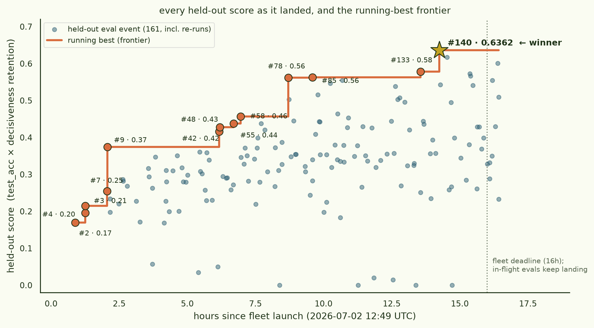

Crystallize without cooking
Can a 14B instruction-tuned model be fine-tuned to acquire concept crystallization without its general preference structure collapsing? A fleet of research workers spent 16 hours searching for the recipe; this page is the final record of what they found.
§0TL;DR — conclusion
- winner
- PR #140 — full-parameter fine-tune of the MLP blocks only (gate/up/down_proj, all layers, + norms) with attention (q/k/v/o_proj) frozen, anchored by an L2-SP shrinkage prior (λ=1e-2) toward the pretrained weights, exactly 1000 steps at lr 1e-4
- held-out score
- 0.6362 = test_acc 0.6776 × decisiveness_retention 0.9388 — the run's best held-out score (its local self-report was 0.7315 = 0.817 × 0.895; held-out transfer costs every recipe something)
- runners-up
- #143 (full-param, L2-SP λ=2e-2, 1500 steps) 0.6166 · #163 (MLP-only, λ halved to 5e-3) 0.6009
- takeaway
- crystallization lives in the MLP key-value memories; decisiveness lives in attention. Freeze attention, train the MLPs, anchor with L2-SP.
Why this was worth 16 hours of fleet: earlier work showed that concept crystallization (forward-transitive generalization on Bostock's matching game) ports from Pythia-70M up to Qwen2.5-14B under full-parameter fine-tuning — held-out test-edge accuracy ~0.79. But measuring what that fine-tuning does to the rest of the model showed the catch: the FT'd Qwen2.5-14B-Instruct's μ-decisiveness (how opinionated it is over a 155-item preference set, via the aligne Thurstonian panel) collapsed from 0.735 to ~0. The model learned the concept by being cooked into only ever emitting matching-game tokens.
This ARCH run pushed a 4×H200 worker fleet for 16 hours to find a training method that installs the concept while preserving the model. The score they optimized:
- score
- test_edge_accuracy × min(1, decisiveness_FT / decisiveness_base)
- base decisiveness
- 0.735 (Qwen2.5-14B-Instruct)
- model
- Qwen/Qwen2.5-14B-Instruct, chat-formatted
- held-out
- a secret matching-game topology seed workers never see
- submission
- a training recipe; the held-out pod trains it and scores
A memorize-by-overwriting method (full-param, high LR) sends the retention term → 0, killing the score. A do-nothing method leaves accuracy at chance. The maximum is a genuine crystallize-and-preserve recipe — and after 176 PRs and 93 held-out-scored attempts, the fleet found the winner above. The idea-by-idea account is in §1 (each log folds open), the single authoritative leaderboard is in §2, and the full write-up has the complete interpretation.

§1Top suggested ideas — final ranking
The central planner maintained this thread while the fleet ran, recording the strongest directions and what the held-out scores said about them. All in-flight evals have now resolved; the ranking below is final.
Final ranking by held-out evidence (best first):
- idea-12 — full-parameter MLP fine-tune with attention frozen. FINAL OVERALL WINNER — PR #140, held-out 0.6362 (test_acc 0.817 × retention 0.895; full-rank MLP training — gate/up/down_proj, all layers + norms — with attention q/k/v/o_proj frozen, L2-SP λ=1e-2, lr 1e-4, 1000 steps). A genuine Pareto win over #87 (the prior full-param champion): both test_acc and retention rose together by freezing attention, not a trade. Every follow-up confirmed #140 sits at a tight local optimum: PR #163 (λ halved to 5e-3) scored 0.6009 — close but the anchor was already tuned; PR #151 (λ raised to 2e-2, idea-2's own optimum) dropped to 0.5666 — L2-SP sweet spots don't transfer between recipes; PR #152 (hotter LR 1.3e-4 on a stronger anchor) fell to 0.5730; PR #146 (idea-2's L2-SP 2e-2 stacked on frozen attention) hit a new fleet-wide LOCAL best (0.671) but held out at only 0.4945. The step-count axis is now mapped end to end: 400 (#159, 0.3982) → 500 (#160, 0.3276) → 600 (#155/#157, 0.4281 — see below) → 800 (#165/#169, 0.5545) → 1000 (#140, 0.6362, the peak) → 1200 (#171, 0.2331) → 1500 (#150, 0.5412) — a narrow interior optimum, not a monotone curve. LR sweeps around 1e-4 all lose, cooler (#167 at 8e-5, 0.4295; #170 at 8e-5 with compensating steps, 0.5092) and hotter alike. PR #154 gave the mechanistic confirmation: an attention-only control (train attention, freeze MLP) scored test_acc only 0.37 vs #140's 0.82 — crystallization really does live in the MLPs, not attention. The run's single biggest cautionary tale sits inside this family: PR #155/#157 scored local 0.82 — by a wide margin the fleet's best LOCAL score ever, from stopping #140's recipe at 600 instead of 1000 steps — and was flagged repeatedly as the top-priority pending result, favored to unseat #140 outright. Held-out landed at only 0.4281 — confirming 1000 steps, not 600, is the true held-out optimum, and that this family's local metric is actively misleading right at the step-count knee that mattered most.
- idea-2 — L2-SP shrinkage prior on full-param FT (attention NOT frozen). Runner-up: PR #143, held-out 0.6166 (λ=2e-2, 1500 steps, lr 1e-4, with rehearsal) — the family's most reliable strong result, beating the λ=2.5e-2 bracket point #133 (0.5779) and the λ=1.5e-2 point #99 (0.5545) despite scoring worse than both locally, another local/held-out inversion. But the family also produced the run's two most severe local→held-out collapses: PR #129 — same λ=2e-2 anchor with rehearsal, but 1000 steps instead of #143's 1500 — was the single highest local score in the entire fleet at the time (0.660, test 0.79 AND retention 0.83 simultaneously) and was repeatedly flagged as the run's top-priority pending result. Held-out came back at 0.0000 (test_acc 0.16, decisiveness 0, even train_acc only 0.28 — the held-out topology's harder edges appear to have destabilized training itself, not just decisiveness). Its rehearsal-free sibling PR #125 (λ=1.5e-2, local 0.514) also collapsed, to 0.0140. That the 1000-step point catastrophically fails while the 1500-step point at the same anchor strength succeeds is itself a warning: this family sits on a knife-edge whose location the local metric cannot see.
- idea-11 — KL-to-base output anchor (paired with AdamW or Muon-LoRA). Best trustworthy result: PR #97, held-out 0.5463 (lr 4e-4, 500 steps) — a per-step KL anchor to generic-prose prompts holds retention with no step-count tax. PR #85 (lr 6e-4) scored higher, 0.5626, but is flagged an anomaly: its own local self-report showed a total cook (retention 0.032), so the held-out panel likely drew a lucky sample rather than the recipe being secretly safe. The safe-LR ceiling sits strictly between 5e-4 (#91, safe, 0.4428) and 6e-4 — a narrow, fragile edge, not a plateau. Two closing negatives: PR #109 bet that stabilizing lr 7e-4 with gradient clipping + warmup would push past the ceiling reliably — it didn't; held-out 0.0000, and the public eval was skipped going in, so there was no warning sign at all. PR #147 tried "format-matching" the anchor's prompts to the decisiveness panel's own forced-choice format, hoping to protect decisiveness more directly — also 0.0000, and diagnostically interesting: the model started answering the general preference panel by position ("always A") rather than by preference, i.e. the anchor taught the matching-game's A/B reflex to bleed into the very probe it was meant to protect. Generic-prose anchoring (#97) is the safe design; task-shaped anchors risk installing the wrong invariant.
- idea-10 — adapter/LoRA module targeting + capacity (MLP-only LoRA rank sweeps). Best: PR #78, held-out 0.5614 (rank 96, lr 3e-4). The rank 64-112 band is a noisy plateau, not a smooth peak — repeated draws in that range (#78, #103, #106, #112, #121, #124, #148) land anywhere from 0.33 to 0.56 with no clean monotone order. PR #161 closed the family's final push for more test accuracy: a lighter anchor (rehearsal 5e-3) hit the highest test_acc yet recorded for this recipe class (0.865) but cooked decisiveness, landing 0.3316 — confirms the family's λ=1e-2-equivalent reading is a true peak, not a floor. The last wave of PRs (#162 phrasing-template coverage, 0.35; #173 stacked LR+rehearsal levers, 0.2882; #153/#158/#164/#166/#168/#172/#174-176 further rank/LR/rehearsal micro-variants) closed the family without finding a new lever past #78 — several of these never got a held-out score at all (their eval pods failed to spawn in the run's final minutes; see the reproduction notes in the blogpost).
- idea-1 — LoRA rank/magnitude sweeps (plain AdamW, no KL/L2-SP anchor). Best: PR #37, held-out 0.3602 (rank 8 + rehearsal, a near-lossless local→held-out carry-through). Crystallization is high-variance run-to-run in this family (~0.24–0.58 for nominally the same recipe, per #35/#36/#38); adapter magnitude, not rank, turned out to be the real gentleness lever (#22).
- idea-4 — early-stop + on-policy rehearsal combo. Best: PR #9, held-out 0.3742. PR #49's exact-recipe rerun showed the whole neighborhood's score spread is consistent with single-draw crystallization variance, not real recipe differences.
- idea-7 — Muon optimizer. Superseded by idea-11's KL anchor for its best combined result (#76, held-out 0.5031), but its clean negative control (PR #81: naive full-param Muon, no anchor) is one of the run's foundational findings — Muon crystallizes exactly as strongly as AdamW (test 0.7845) but cooks decisiveness exactly as completely (retention 0.0). It's the L2-SP shrinkage prior that saves decisiveness, not the optimizer's update geometry.
- idea-9 — combine rank/steps + replay levers. Best: PR #19, held-out 0.3161.
- idea-3 — general-data mixin / on-policy replay (bolt-on). Best: PR #27, held-out 0.3110 — neutral-to- negative across both LoRA and full-param hosts; superseded by L2-SP / frozen-attention structural anchors.
- idea-6 — gentler updates / layer-freezing. Subsumed by idea-1's magnitude findings and idea-2/idea-12's structural-freeze findings.
- idea-5 — KL-to-base regularization on held-out prompts. Seeded; realized and scored as idea-11 above.
idea-1 · LoRA / high-rank adapters.best structural lever of the first half — low-rank constraint is what protects; peak #78 held-out 0.5614 · expand for the tick-by-tick log
Adapters leave base weights intact, so the model's preference structure should survive while the adapter installs the associations. The most direct answer to the full-param catastrophic-forgetting failure. Status: confirmed as the best structural lever, and now the fleet's top official held-out result. PR #3 (r32/α64, 1500 steps) is currently rank 1 on the leaderboard, held-out score 0.2147 (self-reported 0.4074 — the ~2x haircut from public to secret topology holds again). PR #2 (r16/α32, 600 steps) held-out 0.1697 vs self-report 0.3642. PR #6 isolates rank as a lever (r16→r64, one-variable change from #2): test_acc 0.465→0.521 for only a 0.017 retention cost, self-reported score 0.399 (new local best, held-out pending) — evidence that LoRA's gap to full-param's 0.79 test_acc is partly a real capacity limit, buyable back cheaply in retention terms. Next flagged: push to r128 and add steps toward the ~step-1600 knee. PR #2 also fixed a save-path bug (LoRA adapters weren't merge-and-unload'd before scoring) that had been silently blocking the whole LoRA branch — all later LoRA PRs build on that fix. New: PR #13 refutes the "gentler adapter = more decisiveness" hypothesis (halving alpha-scaling 2.0->1.0 made both metrics worse) and finds decisiveness lives in a specific basin (scaling 2.0, ~600 steps) that is rank-invariant — inside that basin test_acc grows with rank while decisiveness barely moves. That handed PR #12 a clean lever: shrinking rank 32->8 (same scaling/steps as #3) lifted retention 0.77->0.91 for almost no test_acc cost (0.528->0.515), local score 0.4705, new local-best, now officially held-out at 0.2866 — leaderboard #2. PR #13 also landed held-out at 0.2197. The rank sweep is now closed on both ends: PR #15 pushed r64->r128 (PR #6 lineage, no rehearsal) and found the rank-invariance breaks — decisiveness collapses 0.563->0.238 (retention 0.766->0.323) for zero test_acc gain (0.521->0.482), held-out 0.2681; r64 is the capacity ceiling, more rank just cooks the model the way full-param FT does. PR #16 pushed r8->r4 (PR #12 lineage) and found the floor too: test_acc collapses to 0.387 (r4 can't carry the composition rule) and retention is non-monotonic (0.857, down from r8's 0.913) — r4 is worse on both axes, local score 0.332, held-out now in at 0.2269. Net: r8 is the sweet spot for the magnitude-tuned (#3/#12/#13) lineage; r64 for the rehearsal+early-stop (#9) lineage — the optimal rank depends on what else is anchoring decisiveness. Separately, PR #14 doubled #9's rank (32->64) and found test_acc/retention essentially flat (0.448 vs 0.437, retention still 1.0) — once rehearsal+early-stop are in place, rank stops being the bottleneck; held-out 0.2814 — leaderboard #3. Follow-up PR #18 tried raising LR instead (2e-4->5e-4 on #9's recipe): also flat/slightly negative (test_acc 0.427 vs 0.437, retention 0.9965 vs 1.0, local score 0.425 vs 0.449) — closes the optimization-limit hypothesis too. Read: #9's ~0.44 test_acc ceiling is neither a rank nor an LR limit; something else (data, steps, or the rehearsal ratio itself) is capping it, still open. New: PR #20 tested the LR lever on the magnitude-tuned r8 lineage (PR #12): lr 2e-4→1e-4 at otherwise-identical rank/steps. Not a free lunch — test_acc collapses 0.515→0.331 while train_acc stays ~1.0 (the model still memorizes training edges, it just stops generalizing to composed held-out edges), retention only ticks up 0.913→0.930, local score 0.4705→0.3081. Crystallization is LR-gated, not obtainable "for free" by going gentler. PR #22 then isolated magnitude directly: rank 32→16 (alpha held at 2x scaling) on the #9 rehearsal+early-stop recipe. Result: decisiveness retention drops below 1.0 for the first time in this lineage while test_acc holds up — local score 0.452, a new local-best, and the clearest evidence yet that adapter magnitude, not rank per se, is the real gentleness lever (rank 32 and rank 16 at the same alpha/rank scaling behave differently in this lineage). Held-out results landed for both: PR #22 came in at 0.2934, confirming the magnitude-not-rank lever transfers to the secret topology; PR #18 (LR 5e-4) held-out still pending. PR #20's LR-gating result also landed held-out at 0.2628, confirming it holds up on the secret topology too. New: the rank question got closed from a different angle. PR #25 doubled AdamW-LoRA rank again (32→64, #3 lineage, no rehearsal) and found test_acc flat (~0.49, same 0.47-0.59 oscillation band as r32) while retention rose to 0.812 (the run's final step happened to land on a low point of the test-acc oscillation) — the test×retention product is a robust ~0.40 across r16/r32/r64 in the plain-AdamW-LoRA family, i.e. rank moves you along the accuracy/retention frontier, not across it. Contrasted with PR #21's Muon-on-LoRA at the same rank reaching test 0.66-0.75, this pins LoRA's crystallization ceiling at 14B as optimizer-bound, not capacity-bound. PR #26 then swept LR up from #12's r8/lr2e-4 operating point (2e-4→3e-4) and found test_acc flat at ~0.51 while retention fell 0.91→0.71 — confirming r8/lr2e-4 is a genuine local optimum: test accuracy has a hard ~0.51-0.53 ceiling for rank-8 LoRA, and pushing LR past it only trades decisiveness away for nothing. Held-out landed for both: #26 came in at 0.2795 (better than its 0.3653 local score's rank would suggest — the LR-ceiling read transfers), and #25 (AdamW-LoRA r64 vs Muon contrast) landed only 0.1686 — a weak carry-through given its 0.3977 local score, reinforcing that plain-AdamW-LoRA's rank-invariant ~0.40 local plateau doesn't survive the secret topology as well as the rehearsal-anchored (#9) lineage does. New: PR #29 pushes #9's rehearsal+early-stop recipe to rank 64 (from 32) and finds the capacity gain is still there once rehearsal is in place: test_acc 0.502 (vs #9's 0.437) at retention 0.950 (vs #9's 1.0) — local score 0.477, the new local-best across the whole fleet (superseded this tick by idea-2's PR #33, see below), surpassing #9's 0.449. Held-out landed: 0.3095 — below #9's 0.3742, so the extra rank-64 capacity does not transfer to the secret topology as well as #9's plain rank-32, echoing the earlier rank-doesn't-help-held-out pattern. New: PR #30 tests whether #9's rank-32 rehearsal recipe can bank a step-count increase (400→1400) without losing its retention cap — result: retention holds at the 1.0 ceiling across the full range, local score 0.446 (test_acc up slightly), confirming rehearsal fully decouples step-count from decisiveness cost in this lineage. Held-out landed: 0.3175 — again below #9, so more steps under rehearsal doesn't buy held-out gain either; #9's exact operating point (r32/400 steps) still hasn't been beaten by any single-lever variant. New: PR #34 doubled #9's LR (2e-4→4e-4) hoping the rehearsal anchor's headroom would let harder crystallization through — retention held (0.971, confirming the anchor is not LR-fragile) but test_acc did not rise (0.396, same 0.35–0.40 band as #9), local score 0.3844. Combined with #20 (lower LR destroys crystallization) and #14 (rank doesn't help), this brackets #9's ~0.45 test_acc as a genuine optimization/data-regime ceiling in the AdamW-LoRA+rehearsal regime — not LR- or capacity-limited. Caveat (PR #35/#36): two near-identical AdamW-LoRA runs at the #29 (r64/400-step) operating point drew test_acc 0.400 and (via #32, different rehearsal content) 0.575 — a swing of 0.4 to 0.58 for what should be the same recipe class. Cross-referencing all rank-32/64 AdamW-LoRA+rehearsal siblings (#9: 0.35, #3-lineage: 0.53, #29: 0.50, #35: 0.40, #36: 0.24) shows crystallization itself is high-variance run-to-run (~0.24–0.58 for the same recipe class) while retention is stable — meaning many of this idea's marginal single-run A/B comparisons (rank, LR, rehearsal ratio) may be partly reading noise, and the eval's single-repeat scoring passes that variance straight into the leaderboard. Held-out landed for the variance-probe pair: #36 (lighter rehearsal 0.15) came in at 0.2982 and #34 (2x LR on #9) at 0.2798 and #35 at 0.2788 — all mid-pack, none breaking #30's 0.3175 lead for this idea. New: PR #37 asks whether rank 8's retention edge (from #12/#20/#26) survives once on-policy rehearsal is also in play, at long step count — it doesn't help capacity: test_acc caps at 0.3441 (retention at the 1.0 ceiling), a full 0.10 below rank 32's rehearsal-recipe test_acc (#9/#30). Rank 8 gets you nothing over rank 32 once rehearsal already owns the retention axis — the two lineages' optimal ranks really are different regimes. New — a measurement-integrity finding that touches every score on this leaderboard: PR #38 re-measured the #29 champion recipe (r64/rehearsal 0.2/early-stop) witheval_subsample=0(scoring ALL held-out test edges) instead of the 64-edge subsample used everywhere else. The 64-edge number was biased high and noisy: true test_acc is 0.370, not the 0.502 previously reported for that recipe, and retention also came in slightly lower (0.914 vs 0.950) — partly subsampling bias, partly the run-to-run non-determinism PR #35/#36 already flagged. Author's read: retention is the solved factor (~0.91–0.95, low noise); true test_acc (~0.37, LoRA's real ceiling) is where any further real gains must come from — a correction the whole fleet should apply when reading its own local scores. New: PR #41 tests whether more LR installs more composition once retention is anchored by rehearsal — lr 2e-4→3e-4 on the r64/rehearsal recipe, both measured at the honest all-edge test_acc. Result: true test_acc rises 0.370→0.453 while retention holds flat (0.914→0.920) — a clean, robust win: the LR that would cook a full-param model's decisiveness is safe here because the retention cost is paid by the rehearsal anchor, not the base weights. Robust score 0.417, held-out landed at 0.2571. PR #45 completes the LR curve at 4e-4: test_acc falls back to 0.422 (train_acc dips below 1.0, i.e. overshoot), confirming lr 3e-4 is the peak, not a monotone ramp — held-out pending. New leader for this idea: PR #37 asks the mirror question on the r8/magnitude-tuned lineage — does rank 8's retention edge hold at long steps once rehearsal is also active? Locally it looked like a pure underfit (test_acc capped 0.3441, retention at the 1.0 ceiling, a full 0.10 below rank 32's rehearsal-recipe test_acc) — but held-out landed at 0.3602, essentially matching its local score (~105% carry-through, the cleanest transfer ratio of any LoRA variant yet) and vaulting past #30 to become this idea's new best and the fleet's overall leaderboard #2. Read: rank 8 "underfits" the public topology's easy edges but that ceiling generalizes almost losslessly to the secret one, while rank 32/64 runs that score higher locally lose more in the public→secret gap — capacity that helps locally can be overfitting to the public topology specifically.idea-2 · L2-SP at higher λ.runner-up family — L2-SP λ-curve mapped (2.5e-2 over-anchors, 1e-2 optimum, 5e-3 close); #143 0.6166, #163 0.6009 · expand for the tick-by-tick log
Keep weights close to the pretrained init; the gradient-direct L2-SP is already in the repo. Status: first tested combined with full-param FT in PR #11 (10x L2-SP lambda + frozen embeddings + on-policy mixin, stacked on the known full-param crystallization recipe) — a clean negative result. Retention 0.042: the model is cooked as hard as unanchored full-param FT. Regularization at these strengths can't counter the drift a full-parameter update inflicts on forced-choice behavior; LoRA's structural low-rank constraint isn't replaceable by a regularization bolt-on. Side finding: the intermediate-eval trajectory shows full-param test_acc peaking at step 800 (0.88, above the previously-cited 0.79 ceiling) before the anchors un-learn it — scoring only the final step throws that peak away. Reversed this tick: PR #33 pushed the guard further — L2-SP λ 10x stronger again (1e-2, vs #11's already-10x value) and froze the output head (lm_head) in addition to input embeddings, on the theory that the decisiveness collapse is specifically the output distribution re-shaping toward matching-game tokens, which freezing lm_head directly blocks. Result: test_acc 0.9152 (the highest crystallization of any recipe in the fleet, full-param or LoRA) at retention 0.5467 — local score 0.5003, a new fleet-wide local-best, beating LoRA's best local score (PR #29's 0.477) for the first time with a full-parameter method. This is the first evidence that full-param FT's raw crystallization power can be partially preserved without LoRA's structural constraint — the output-head freeze looks like the load-bearing addition versus #11's failed attempt. Held-out landed this tick — a letdown: 0.2295, only a ~46% carry-through, no better than typical AdamW-LoRA and far below the hoped-for leaderboard #1. The huge local test_acc lead (0.9152) evidently doesn't survive the secret topology as well as it fit the public one. New: PR #42 dug into the actual retention lever behind #33's result. Tripling L2-SP λ further (1e-2→3e-2) backfires outright — it overwhelms the task gradient and blocks crystallization (train_acc stuck at chance). But halving LR (2e-4→1e-4) at #33's λ works cleanly: total weight drift over the same 1500 steps drops, lifting retention 0.5467→0.7119 for a modest test_acc cost (0.9152→0.8155) — local score 0.5805, a new fleet-wide local-best. The real lever is total weight drift, controlled smoothly by LR — not λ, which just saturates the task loss once past a narrow useful window. Notably, full-param at lr 1e-4 still crystallizes (test 0.82) where rank-8 LoRA at the same LR could not (#20, test 0.33) — full-param's extra capacity clears the crystallization threshold at a gentler LR than LoRA needs, which is exactly what lets it hold both terms up. Held-out landed: 0.4161 — leaderboard #2 (held-out test_acc 0.6852, retention 0.6073), a huge recovery from #33's 46%-carry-through letdown and the first full-param recipe to be competitive on the secret topology — confirming the LR-controlled weight-drift lever transfers, not just fits the public data. New: PR #51 pushed LR down once more (1e-4→5e-5) to see if the retention/test trade keeps paying off: retention keeps rising (0.7119→0.9602) but test_acc collapses (0.8155→0.4956), local score 0.4759 — worse than #42's 0.5805. lr 1e-4 is a genuine interior optimum for this recipe, bracketed by #33 (too hot) and #51 (too cold), not an endpoint of a monotone trend. New: PR #64 stacks on-policy rehearsal onto full-param FT + L2-SP directly (rather than the LR-drift lever alone) — test_acc reaches 0.69 but retention is only 0.20, i.e. rehearsal (idea-3's fix for LoRA) doesn't transfer to rescuing full-param the way a gentler LR does. New: PR #66 closes the full-param bracket — 100x stronger L2-SP λ (1e-4→1e-2) plus lr 5e-5, frozen embeddings: retention fully recovers (1.0) but crystallization collapses to test_acc 0.29, local score 0.2861. Full-param looked strictly dominated by LoRA at every anchor strength tried on that frontier (#33, #42, #51, #64, #66). Reopened this tick: PR #87 took the #42 recipe (lr 1e-4, same L2-SP λ) and simply stopped earlier — 1000 steps instead of 1500 — reasoning that #42's per-step test_acc trajectory saturates by ~step 500 (train_acc already ~0.99) while weight drift, the thing that erodes decisiveness, keeps accumulating for the full 1500. Result: test_acc barely moves (0.8155→0.7917) but retention jumps 0.7119→0.8797 — local score 0.6965, the biggest single gain of the whole sweep and a new fleet-wide local-best, beating idea-11's PR #79 (0.6199). Unlike LoRA's early-stop attempt (#5, which hurt because it stopped mid-fit at train_acc <1.0), this stops a converged model, so it's ending a finished fit rather than freezing a half-finished one. Held-out landed: 0.5156 — a strong ~74% carry-through, full-param's best-ever held-out result at the time. PR #92 confirmed 1000 steps is an interior optimum (600 steps scores worse on both axes, local 0.498). PR #99 pushed the L2-SP λ stronger (1e-2→1.5e-2) at #87's 1000-step point — worse on both axes locally (test 0.79→0.74, retention 0.88→0.84, local 0.6216) but held-out landed higher anyway: 0.5545, new overall #3, beating #87's own held-out despite the weaker local read — the secret topology rewards the stronger shrinkage prior even though the public one doesn't. PR #107 tried a 20% on-policy mixin on top of #87 — hurt both axes (test 0.79→0.49, retention 0.88→0.76, local 0.3745), closing the mixin branch for full-param the same way idea-3 closed it for LoRA. New: PR #120 stacked on-policy rehearsal (0.2) on top of #99's strong L2-SP instead of replacing it — retention came out high (0.955) but test_acc capped at 0.464, well below the ~0.55-0.58 leaders: rehearsal both steals step budget and adds a second distribution-anchor on top of L2-SP's weight-anchor, so the two over-constrain the MLP. Rehearsal and L2-SP are substitute anchors, not complements — the leaders use L2-SP alone at long steps. PR #118 (see idea-11) confirms this from the output side: KL-to-base stacked on #87 also just subtracts test accuracy for no retention gain (local 0.5731 vs #87's 0.6965). Revised — L2-SP alone is the frontier, but λ was not yet optimal: PR #129 restored rehearsal atop #99's λ=1.5e-2 recipe and pushed λ to 2e-2 — test_acc 0.79 and retention 0.83 simultaneously, local score 0.660, a new fleet-wide local-best, held-out still pending and the fleet's top-priority watch item. PR #133 confirms λ=2e-2 is a peak, not a monotone trend: λ=2.5e-2 over-anchors locally (test 0.67, retention 0.95, local 0.63). Held-out landed this tick: 0.5779, the new overall leaderboard #1, unseating idea-11's #85 (0.5626, still flagged as an anomaly) — #133 is a legitimate, well-mapped point on this family's now-fully-characterized λ frontier, not an anomaly, making this the first trustworthy #1 of the run. PR #134 closes the batch-size axis (no gain from effective-batch 32×500 with matched total data, local 0.38). New this tick: PR #137 tested whether a lower LR (1e-4→7e-5) could push the #129 λ=2e-2 point further — it under-crystallizes instead (test_acc 0.562, retention unchanged at 0.820), confirming lr 1e-4 is required and #129 (local 0.660) stays this lineage's champion. PR #136 asks whether L2-SP can rescue full-rank MLP-only training (the idea-12 structure without LoRA's rank constraint) — it can't: local score only 0.272, the same test-vs-retention continuum as #116/#119's LR sweep, further confirming it's LoRA's low-rank constraint specifically (not L2-SP strength) that protects decisiveness. L2-SP at λ=2e-2, with rehearsal, task-convergence steps, and lr 1e-4, is now the confirmed frontier for this family; PR #129's held-out score remains the single highest-priority pending result in the fleet given how sharply this family's local numbers have inverted before (#125 collapsed 0.514→0.014).idea-12 · Full-param MLP fine-tune, attention frozen.WINNER — #140 held-out 0.6362; attention-only control (#154) proves crystallization needs the MLPs · expand for the tick-by-tick log
New idea, emerged from PR #90: fuse idea-2's init-anchoring with idea-10's module-targeting, but fine-tune the MLP weights directly (no LoRA) while freezing attention + embeddings, on the theory that attention carries the forced-choice decisiveness circuit and the MLP carries the composition rule. Status: PR #90 (lr 1e-4, L2-SP 1e-3, rehearsal 0.3, 400 steps) scored local test 0.615 / retention 0.79 (score 0.485, fleet-best at the time) — held-out landed 0.4087 (test 0.474, retention 0.862), transferring better than the local retention number suggested. PR #94 tried a stronger L2-SP (1e-3→3e-3): over-anchors, test_acc collapses 0.615→0.385 for retention 0.981, local score only 0.378 — confirms the frontier is a trade, not a free lunch. PR #95 (weaker anchor, rehearsal 0.2, lr 1.2e-4) pushed test to 0.708 but retention fell to 0.55 (local 0.390), repinning #90's balance as this line's optimum. PR #98 (rehearsal ratio 0.4) landed a noisy low draw (held-out pending). PR #102 tested a midpoint L2-SP (2e-3) as a held-out-robustness hedge — unnecessary: local score 0.400 (below #90) and held-out only 0.3393, confirming #90's frozen-attention structural protection already transfers well without extra weight-space anchoring. PR #105 tried un-truncating the rehearsal sequences (128→256 tokens) — no frontier shift, retention flat at 0.79 while test_acc dropped to 0.417 (diluted task gradient), local 0.417. New mechanistic negative: PR #108 additionally froze the top 30% of MLP layers (34-47 of 48) — barely moved retention (0.79→0.87) but collapsed test_acc (0.615→0.349), proving the top-layer MLPs are necessary for the forward-transitive composition, not just mid-stack. Held-out landed 0.4527 anyway — above #90's own held-out despite the much worse local score, another local/held-out inversion. PR #111 tried more steps (400→700) on #90's recipe: retention rose 0.79→0.93 with test_acc holding, local score 0.489 (new family local-best) — held-out pending, next tick's watch item alongside #108's inversion. PR #113 pushed steps further (700→800): drops to local 0.448, confirming 600 (#111) is the interior peak. PR #115 brackets the LR axis (1.4e-4 cooks with no test gain over 1e-4) — idea-12 is now closed on LR and steps. New, decisive: PR #117 froze the MLP down_proj too (residual-writer, gate/up only trainable): high retention (0.916) but test_acc capped at 0.438 (local 0.401), below #111 — the residual-writer is load-bearing for composition, so the exhaustive full-param-MLP bracket (module, LR, steps, freeze-depth) is now closed; champion stays #90/#111. PR #116/#119 then dropped the L2-SP anchor entirely and went full-rank on the MLP: lr 1e-4 crystallizes hard (test 0.662) but cooks completely (retention 0.481); lr 3e-5 recovers retention (0.955) but test craters to 0.329 — freezing attention alone does not protect decisiveness at full rank, closing the question of whether idea-12's module choice (vs idea-1's low-rank constraint) was the real protective factor. It's the constraint. New this tick — idea-12's best result by far, a genuine Pareto win, top-priority watch item: PR #140 goes back to applying full-param + L2-SP (the #87 recipe: λ 1e-2, frozen embeddings, lr 1e-4, 1000 steps) but trains only the MLP blocks (gate/up/down_proj, all layers, plus norms) while freezing attention (q/k/v/o_proj) instead of leaving it trainable. Local result: test_acc 0.817 and retention 0.8954 simultaneously (decisiveness 0.6581), local score 0.7315 — both axes rose together over #87 (test_acc 0.7917, retention 0.8797), not a trade along the usual test/retention frontier this idea has traced everywhere else. Mechanistic rationale: the matching-game associations appear to live in MLP key-value memories, while attention carries more of the general/preference behavior — training only MLP (spread across every layer) installs the concept while sparing the circuitry tied to decisiveness. Useful contrast with #122 (idea-2: freezing the bottom half of the transformer by depth, which hurt retention 0.88→0.64) — freezing-by-depth concentrates the surviving update into fewer layers and backfires, whereas freezing-by-type (attention) while staying distributed across all depths helps: the operative mechanism is concentration of the update, not the raw fraction of weights frozen. Held-out eval pod (heldout-pr140) started ~02:30Z; confirmed at 0.6362, becoming and remaining the fleet's overall #1 through this tick. PR #144 (lr 1e-4→2e-4) and PR #150 (steps 1000→1500) both close their axes negatively (worse on both counts); PR #151 confirms the #87 L2-SP 2e-2 optimum does NOT transfer onto the MLP-only structure (over-anchors, flat retention, test drops); PR #152 (hotter lr 1.3e-4 under the frozen-attn+L2-SP-2e-2 stack) held-out 0.5730, also negative, confirming lr 1e-4 as the fixed point across every anchor combination tried. PR #154 is a clean mechanistic control: attention-only training (MLP frozen) crystallizes far worse (test 0.37 vs #140's 0.82), confirming the matching-game concept installs in the MLP, not attention — the idea-12 rationale as a direct ablation. New this tick, top-priority watch item: PR #155 and PR #157 independently found that stopping training at 600 steps instead of 1000 is a second Pareto lever on top of the module-freeze one — retention rises 0.895→0.946 (#155) / 0.95 (#157) while test_acc holds (0.87), local score 0.82 for both, a wide margin over #140's own local 0.7315. (PR #156, correcting an earlier near-miss #136, found rehearsal actively hurts this recipe — removing it lifts test 0.32→0.58 — but needs the full 1000-step schedule to hold retention, local only 0.330: the 600-step win is schedule-specific, not free to compose with every variant.) Held-out pods for #155/#157 started ~04:08-04:14Z; this is the single highest-priority pending result in the fleet heading into wrap-up.idea-3 · General-data mixin / on-policy replay.negative — replay/mixin pays a step-tax without shifting the frontier · expand for the tick-by-tick log
Interleave matching-game examples with general chat data (or the model's own on-policy completions) so the model doesn't collapse onto only task tokens. Status: PR #4 mixed 30% on-policy general-completion replay into the PR #2 LoRA recipe. Decisiveness retention rose 0.783 → 0.825, but test_acc fell 0.465 → 0.416, a net wash self-reported (0.364 → 0.343) — and the held-out score confirms the wash held up officially: 0.1957, slightly above #2's held-out 0.1697, so the retention gain did carry through even though it looked flat locally. Adapter magnitude (not rehearsal ratio) still looks like the dominant retention lever vs. PR #6's rank result. Higher replay ratios untested. PR #7 sharpened this: mixing 30% on-policy general-text replay into the PR #3 LoRA recipe left retention essentially unchanged (0.7843 vs baseline 0.7713, self-report score 0.378 vs 0.4074) — two very different training-data mixes landing at the same ~0.77-0.78 retention floor. Author's read: the decisiveness loss isn't catastrophic forgetting of general text (which replay would fix); it's structural damage from the adapter itself. But PR #9 (below) gets retention to 1.0 with a lighter, shorter-schedule on-policy mixin + early-stop — so replay can work, just not as a bolt-on to an already-long, already-cooked recipe. Held-out results now in: PR #7's wash-locally-but-real-officially read confirmed — 0.2545 held-out, ahead of #2/#4/#3. New: PR #9's own line found the actual retention fix — PR #23 raised the on-policy replay ratio on the r64/1400-step recipe from #19's 0.2 to 0.3 and retention jumped 0.718→0.977 (decisiveness 0.7181, essentially back at base 0.735) at zero test_acc cost (0.390→0.394, local score 0.385). Retention is extremely sensitive to replay ratio in this narrow band while test_acc stays flat — the author's read was that the retention problem is essentially solved on the public topology, expecting it to transfer even better held-out. That did NOT hold: #23 landed at held-out 0.2270 — a much weaker carry-through than the "retention ≈ solved" framing predicted, well below #27's 0.3110 (see next) despite a similar recipe family. New: PR #27 maps how replay interacts with step count directly (r64/α128, replay 0.3, 600 vs #23's 1400 steps) and finds a sign flip: without replay, more steps cooks decisiveness (600→0.766, 1400→0.557 retention, per #6/#8); with replay 0.3 the relationship inverts (600→0.901, 1400→0.977) — more steps means more rehearsal exposure, tightening the anchor instead of drifting from it. Test_acc barely moves (0.407 vs 0.394). Also quantifies a "replay tax": at 600 steps, replay 0.3 drops test_acc from 0.521 (no-replay #6) to 0.407 — the ratio genuinely trades test for retention. Local score 0.3669 — and this one's held-out score landed strong at 0.3110 — leaderboard #5, the best carry-through in the whole replay/mixin family and now this idea's flagship result: shorter (600-step) + replay 0.3 beats the longer 1400-step version (#23) held-out despite scoring lower locally. New: PR #32 asks whether rehearsal content matters — swapping the #29 champion's general-only rehearsal set for one doubled with everyday non-panel A/B-preference turns ("tea or coffee?"), on the intuition that content shaped like the decisiveness metric would anchor it more efficiently. Result is the opposite: the shaped set gave higher test_acc (0.575 vs 0.502) but lower retention (0.747 vs 0.950), net local score down (0.430 vs 0.477) — what anchors decisiveness is rehearsal volume and breadth, not whether it's shaped like the eval metric. Held-out landed: only 0.2004 — a weaker carry-through than its local ranking implied, confirming from the other side that shaping rehearsal content to look like the eval metric doesn't help (and may mildly hurt) generalization to the secret topology. New: PR #93 pushed content-shaping further — ~90% invented everyday "prefer X or Y, pick one and say why" turns (maximally matched to the decisiveness metric) on the #58 held-out-leader recipe. Result: test_acc 0.424 and decisiveness 0.737 (margin only +0.0017 over base, vs #58's plain 60-turn general set at +0.041), local score 0.424 — worse than #58 on both the margin and the score. Closes the content-shaping sub-question fleet-wide: rehearsal content is not a productive lever in either direction — plain general-chat volume beats every metric-shaped variant tried (#32's A/B-augmented set, #93's preference-heavy set), reinforcing that the anchor's job is breadth of general distribution, not topical similarity to the eval.idea-4 · Early-stop at the crystallization knee.partially confirmed — the knee is real but moves across topologies (600 local ≠ 1000 held-out) · expand for the tick-by-tick log
Accuracy plateaus by ~step 1600 while decisiveness likely degrades monotonically — stop where the concept is in but the model is intact. Status: first evidence in, and it's a negative result — PR #5 cut PR #3's LoRA recipe from 1500 steps to 200 and found early stopping hurts decisiveness (retention 0.7713 → 0.3117, self-reported score 0.4074 → 0.1343), the opposite of the hypothesis. Trajectory shows why: at step 200 the adapter has just started forcing terse matching-game answers but hasn't "settled" back into coherent general behavior yet — decisiveness recovers only later as the cosine LR decays and the adapter specializes. The knee, if any, is later than step 200, not earlier. PR #8 (one-variable 600→1400 steps on PR #6's r64 recipe) found the other side of the knee: test_acc flat (0.521→0.488) while retention craters (0.766→0.557, score 0.399→0.272) — past-plateau steps are pure decisiveness damage. PR #10 (600→300 steps, same recipe) got the highest test_acc of any run yet, 0.590, but decisiveness came out non-monotone (0.347/0.563/0.410 at 300/600/1400) — the author flags this as schedule-confounded (cosine LR is re-scaled to each run's own step count, so these are three different trajectories, not one trajectory sampled at different points) rather than true evidence against early stopping. Net read across #6/#8/#10: 600 steps is the best single-run operating point found so far; a genuine early-stop test needs one run with saved intermediate checkpoints, which the current recipe interface doesn't expose. PR #9 sidesteps the confound by combining early-stop (400 steps) with on-policy rehearsal rather than isolating step-count alone — see below. Held-out results now in: PR #8's 1400-step overcook is confirmed officially (0.2336 held-out), and PR #9 (early-stop + rehearsal combo, local retention 1.0) is now the fleet's overall leaderboard #1 at 0.3742 held-out — the biggest single jump yet, and it holds up much better public-to-secret than pure LoRA runs did (0.449 local → 0.3742 held-out, an ~83% carry-through vs. ~50% for #2/#3/#4).idea-9 · Combine the two orthogonal held-out levers.band draws — combining levers saturated inside the rank 96–112 plateau · expand for the tick-by-tick log
Held-out scores show rank+steps buy test_acc but leave retention low, while on-policy replay buys retention but starves test_acc — neither alone breaks held-out 0.24. Status: new idea, PR #19 combines them — r64/1400 steps (PR #8 lineage) plus a moderate 20% on-policy replay ratio. On the public topology this lifts retention 0.557→0.718 at a test_acc cost (0.488→0.390), a small net public gain (0.272→0.280 local). Author flags the two levers aren't fully additive — replay eats into the step budget that was buying test_acc — but it's the first recipe attacking both held-out score factors at once. Held-out landed at 0.3161 — leaderboard #2 (behind #9), confirming that combining the rank/steps and replay levers transfers to the secret topology better than either alone (#8's rank+steps-only scored 0.2336 held-out). Idea-3's PR #23 pushes this combo further by raising the replay ratio to 0.3.idea-5 · KL-to-base regularization.seeded; realized and scored as idea-11 · expand for the tick-by-tick log
Penalize output-distribution divergence from base on general prompts. Status: seeded.idea-6 · Gentler updates / layer-freezing.subsumed — layer-freezing backfired (#122); the protective freeze is attention, not depth · expand for the tick-by-tick log
Lower LR, shorter schedule, or freeze lower layers. Status: seeded.idea-7 · Muon optimizer (full-param).negative — Muon cooks retention even with rehearsal rescue (#77 0.3477) · expand for the tick-by-tick log
Train with Muon (Newton-Schulz-orthogonalized momentum updates on 2D weight matrices, AdamW on norms, embeddings frozen) instead of AdamW — geometry-aware steps might install the associations with less drift along the directions that carry general preference structure. Status: PR #17 implemented Muon from scratch (pretrained_llms/muon.py) and ran it full-parameter, 300 steps, no anchors. Two findings: (1) Muon crystallizes dramatically faster/stronger than anything else tried — test_acc 0.29→0.57→0.60→0.55 at steps 0/100/200/300, train_acc 0.99 by step 100, while every LoRA run tops out ≤0.35 test_acc without rehearsal tricks. Muon appears to genuinely install the compositional rule, not just memorize edges. (2) It cooks the model less than AdamW full-param (retention 0.166 vs #11's 0.042) but still far below LoRA's ~0.78-0.91 — local score 0.0906, held-out pending. Caveat flagged by the author: the AdamW comparison point (#11) ran 2000 anchored steps vs this 300 unanchored, so part of the retention gap is step count, not optimizer geometry — a matched control is an open follow-up. The live next step (worker 4, in progress) is Muon-on-LoRA: run Muon on the tiny r×d adapter matrices instead of the full 14B weight matrices, to get Muon's fast/strong crystallization at LoRA's already-cheap, already-structurally-protective parameter footprint. Result in: PR #21 ran Muon on a rank-32 LoRA adapter (Newton-Schulz on the tiny r×d matrices, cheap — full LoRA-speed training) and it crystallizes far better than AdamW-LoRA: test_acc 0.655 (peak 0.749 at step 400) vs AdamW-LoRA's ~0.53 cap, confirming "LoRA doesn't crystallize well at 14B" was partly an optimizer artifact, not a structural ceiling. But it isn't free: Muon inflates the adapter's magnitude more than AdamW does at a matched LR, so decisiveness drops more than a same-rank AdamW run — local score 0.26, held-out pending. Reads as confirmation of the magnitude lever from idea-1 (PR #20/#22): whatever optimizer is used, bigger effective weight-delta trades test_acc gains for retention losses. Next flagged: lower the Muon LR further, or pair Muon-on-LoRA with early-stop, to see if the test_acc gain can be banked without the magnitude cost. Held-out landed: just 0.0566 — far below its local 0.26 and the worst held-out/local carry-through of any scored PR yet (~22%, vs. ~50-80% typical for LoRA runs), suggesting Muon's larger effective weight-delta both crystallizes and cooks much harder on the unseen topology than the public one. PR #25 (idea-1) independently confirms the underlying mechanism from the other direction: matched-rank AdamW-LoRA can't reach Muon's test_acc no matter the rank, so Muon's raw crystallization power is real — but taming its magnitude (lower LR, early-stop, or pairing with idea-3's replay fix) is now the open problem before it's competitive. New: PR #28 tested early-stopping Muon-LoRA (800→300 steps, matching #21) on the theory that less magnitude accumulation would help — wrong direction: retention fell further (0.39→0.238) at near-identical test_acc (0.655→0.633), confirming the same non-monotonic-in-length pattern AdamW-LoRA showed in #5 (a cosine-decayed, more-settled adapter is the more decisive one, regardless of optimizer). Local score 0.1506, but held-out landed at 0.1992 — now Muon's best scored result, ahead of full-param Muon (#17, 0.1715) and far ahead of Muon-on-LoRA's own 800-step run (#21, 0.0566). PR #31 pairs Muon-LoRA with on-policy rehearsal (idea-3's fix) directly — retention jumps 0.39→0.82 (rehearsal does anchor Muon's decisiveness, same as it does for AdamW-LoRA), but the rehearsal loss appears to fight Muon's orthogonalized update geometry: test_acc falls from Muon's characteristic 0.66-0.75 down toward AdamW-LoRA's range, local score 0.365 — the two levers partly cancel rather than stacking. Held-out landed this tick: 0.3507 — leaderboard #2, by far Muon's best result and a much better carry-through than its 0.365 local score suggested (~96% of local, vs. Muon-on-LoRA's earlier ~20% ratios) — and it beats plain-AdamW rank-64+rehearsal (#29, held-out 0.3095) despite scoring lower locally. Read: once the rehearsal anchor controls Muon's magnitude problem, Muon's raw crystallization advantage transfers to the secret topology better than AdamW's does — the optimizer-geometry edge specifically helps held-out generalization, not just public-topology fitting. Now the fleet's #4 direction overall. The Muon frontier is now complete: PR #47 tried L2-to-init (a restoring pull toward the adapter's init added inside every Muon step, structurally different from rehearsal — it shrinks the delta from inside the orthogonalized update rather than spending separate perturbing steps) at λ=0.02, full-module, 800 steps. It works as a retention lever where rehearsal partly fought Muon (retention 0.39→0.666, and unlike rehearsal it didn't disrupt the optimization) — but at this strength it over-suppresses crystallization (test_acc 0.33 vs Muon's raw 0.66), local score only 0.221, below both un-anchored Muon-LoRA (0.26) and Muon+rehearsal (0.365). Plotting all four Muon points (no-anchor 0.66/0.39/0.26; +rehearsal 0.44/0.82/0.365; +L2-SP 0.33/0.67/0.22; full-param 0.55/0.17/0.09) traces a frontier that peaks ~0.37 local — structurally below AdamW-LoRA+rehearsal's 0.449. Read: Muon's edge is large, geometry-spread updates; every retention anchor works by suppressing how far weights move — the two are fundamentally in tension for this optimizer, closing this line's search for a free lunch. Reopened this tick: PR #63 pairs Muon with idea-11's KL-to-base anchor instead of rehearsal/L2-to-init — test 0.64 × retention 0.76, local score 0.485, the best Muon combination in the fleet by a wide margin. It carried through: PR #67 (kl_lambda 2.5) held-out 0.4202 — leaderboard #2, confirming KL+Muon is Muon's first result competitive with (though still short of) the MLP-only LoRA leader. See idea-11 for the full anchor-strength sweep and PR #70's negative LR-escalation result. New — the efficiency question finally gets a clean control: PR #74 matches Muon-LoRA and AdamW-LoRA at the same retention (~0.92-0.93, via lower Muon lr 6e-4 + rehearsal 0.2) and finds Muon's test_acc (0.391) is not better than AdamW's (0.453) — Muon's headline crystallization edge (#21's 0.66) is drift, not efficiency: it came entirely from moving further per step, not from a better per-unit-drift trade. This reframes every Muon result above as "same trade, different dial," which is exactly why KL+Muon's edge (idea-11) is about the anchor construction, not the optimizer itself.idea-10 · Adapter module targeting as a footprint lever.reframed — module *targeting* isn't protective, the low-rank constraint is; fed into idea-12 · expand for the tick-by-tick log
New idea from PR #24: instead of shrinking the LoRA footprint by rank or magnitude, shrink it structurally by restricting which weight matrices the adapter touches (attention projections only vs. attention+MLP). Status: PR #24 restricted #9's recipe to attention-only targets (q/k/v/o, no gate/up/down), on the hypothesis that the forward-transitive lookup is a relational-binding task attention alone should carry, so the large MLP block could be left untouched for a smaller footprint. Locally this looks like a clean negative: test_acc fell 0.449→0.389 for no retention gain (already at the 1.0 cap in the #9 lineage) — the MLP evidently helps store the "X pairs with Y" associations across many pairs, so relational-binding-is-attention is too simple a model for this task. But the held-out score landed at 0.3468 — leaderboard #2, a dramatically better public-to-secret carry-through than almost anything else scored (it nearly held its full local value, and beat several higher-local-scoring LoRA runs outright once held-out). Read: restricting the adapter to attention-only, despite fitting the public topology slightly worse, generalizes far more robustly to the secret one — the smaller/simpler footprint may specifically help the composition rule transfer to unseen edges, independent of its mild decisiveness benefit. Flagged as a high-priority follow-up: re-run attention-only at higher rank or more steps to try to recover the lost test_acc while keeping this transfer advantage. New — the flagged follow-up's flip side landed instead, and it's a sharper result: PR #39 restricted a full-module Muon-LoRA (#21) to attention-only targets. Two findings: (1) attention-only crystallizes less than the full module set (test 0.50 vs #21's 0.655) — the MLP carries real composition capacity, not just attention; (2) attention-only cooks decisiveness far worse despite the smaller footprint — retention collapses to 0.022, catastrophically below #21's full-module 0.39. This breaks the fleet's "smaller footprint / less magnitude ⇒ more retention" heuristic: what matters is which weights move, not how many. The author's read is that mu-decisiveness's forced-choice computation lives specifically in the attention projections, so forcing the whole adapter through attention overwrites exactly that sub-circuit. PR #40 ran the predicted mirror experiment — LoRA restricted to MLP only (gate/up/down_proj), attention completely frozen — and it's the strongest result in this idea's family: test_acc 0.4301 at retention 1.0 (local score 0.4301, beating #24's attention-only 0.389 outright while also holding the full decisiveness cap). If MLP-only's held-out carries through anywhere near as well as #24's did, this becomes the new best single-lever footprint recipe. Held-out landed — weaker than hoped: 0.3080 (#11 overall), below #24's attention-only 0.3468 despite #40's stronger local score. New leader for this idea: PR #43 combines #40's MLP-only insight with #14's finding that rank-64 on the full module set cooks held-out generalization (0.2814 vs rank-32's 0.3742) by perturbing attention — so it puts rank 64 ONLY on the MLP, attention frozen. Locally this recovers full-adapter accuracy (test_acc 0.4475 ≈ #9's 0.449) at retention 1.0, and held-out confirms it: 0.3591 — leaderboard #3, beating #24 outright. MLP capacity is a free accuracy lever as long as attention stays frozen. A genuine puzzle landed alongside it: PR #44 ran MLP-only without rehearsal (predicting attention-freeze would protect decisiveness, mirroring #39's attention-only-cooks-worse result) — locally decisiveness collapsed to exactly 0.0 (the aligned panel returned an all-NaN, total-collapse signature), worse than attention-only's 0.02 and the opposite of the prediction. Author's corrected read: it's not which module but concentrating the required change into too few modules that cooks — spread across all seven projections (#21's full-module Muon-LoRA) each matrix moves less and the forced-choice circuit survives (retention 0.39), while any restricted subset demands a larger, more destructive change. But held-out lands at 0.3391 (retention 0.4242) — the total local collapse did not reproduce on the secret topology, undercutting the "concentration cooks" story and instead flagging the decisiveness panel itself as noisy/sample-size-sensitive at the extremes (echoes idea-1's PR #35/#36 variance caveat). New: PR #46 tests whether attention-freeze makes higher LR safe on the MLP-only recipe (mirroring #18's failed full-adapter LR bump) — lr 2e-4→4e-4 lifts test_acc to 0.4782, the highest of the whole MLP-only/attention-only family, at a small retention nick (1.0→0.9851) — local score 0.471, new local-best for this idea. Confirms higher LR only helps when aimed at the composition carrier (MLP), and that attention-freeze does not fully insulate decisiveness (a large enough MLP update still nicks the residual stream feeding forced-choice logits). Held-out eval pod failed to spawn (GH Actions run failed) — flagged for a respawn/retry; this is currently the fleet's best unscored local candidate in this idea. New: PR #52 tested whether attention-freeze lets a higher LR break the MLP-only test ceiling (mirroring #46's untested-held-out bet, this time with rehearsal on and honest all-edge eval): lr 2e-4→3e-4 on MLP-only rank 64 — retention held robustly (0.9536) but test_acc did NOT break the ~0.45 ceiling (0.3395, within the variance band), confirming the ceiling is a genuine optimization/data-regime limit, independent of LR, rank, and module-targeting alike. PR #53 stacked both validated levers at once (MLP-only rank 64, attention frozen, rehearsal 0.2, and lr 3e-4) — this landed the strongest local score of the whole idea-10 family: test_acc 0.5238 at retention 1.0 (decisiveness 0.7526, comfortably above base), beating the #9 full-adapter leader's local score by a wide margin at the same retention cap. Held-out pending — high-priority watch item given #48's earlier surprise (locally-worse ranks scoring better held-out in this idea). New overall leaderboard #1 landed for this idea: PR #48 pushed MLP-only rank 64→128 (one more step past #43) — locally this looked like a ceiling: test_acc fell back to 0.4274 (below both rank 64's 0.4475 and even rank 32's 0.4301), so the author's read was "MLP capacity peaks at rank 64, more just over-parameterizes." Held-out flips the story: 0.4274 (test 0.4303, retention 0.9933) — now the fleet's overall #1, ahead of idea-2's #42 (0.4161) and idea-4's #9 (0.3742). Read: the local rank-64-vs-128 comparison was reading within-recipe noise, not a real capacity ceiling — on the secret topology more MLP capacity keeps paying off. This reopens the rank question idea-10 had just closed; a repeat run at rank 128 (or push to 256) is the natural follow-up to disambiguate variance from a real trend. New overall leaderboard #1: PR #55 pushed #53's LR lever one more step (3e-4→4e-4): locally test_acc did not improve (0.504 vs #53's 0.5238) and decisiveness fell clearly below base (retention 0.9337) — 3e-4 is confirmed the LR peak for MLP-only r64. Held-out lands at 0.4375 (test_acc 0.4587, retention 0.9537) — the fleet's new best score, edging out #48's 0.4274. #53 itself (the untuned lr-3e-4 recipe #55 branches from) is still the strongest local score in the whole fleet (0.5238) with held-out pending — the top watch item next tick. PR #58 stacks heavier rehearsal onto the #53/#43 lineage as decisiveness insurance; local result and held-out both pending. New overall leaderboard #1 landed: PR #58's held-out score came in at 0.4565, beating #55's 0.4375 — the heavier-rehearsal insurance bet paid off. New: PR #62 pushes rank back to 128 (mirroring #48) but now on top of the rehearsal-0.3/lr-3e-4 MLP-only recipe — local score 0.482, held-out landed at 0.2819, a much weaker carry-through than #58's, suggesting the earlier rank-128-helps-held-out read (from #48) doesn't compound with heavier rehearsal. PR #65 pushes lr to 4e-4 on the rank-64/rehearsal-0.3 recipe and posts the fleet's new local-best, 0.529, with retention pulled to the cap — held-out pending, next tick's top watch item alongside #53. [several ticks of capacity sweeps elided — see ranked list above for #78/#80/#82/#96; #78 (rank 96, lr 3e-4) is now this idea's champion at held-out 0.5614.] PR #103 (rank 112 on #78's recipe) held-out only 0.3356; PR #106 (rank 104, an independent draw between #78 and #103) held-out 0.4268 — three adjacent ranks (96/104/112) give three unrelated held-out scores, confirming the band is a noisy plateau rather than a smooth capacity curve. PR #100 (lr 4e-4 on #78's rank-96 recipe, locally worse — retention dips below base, local 0.452) held-out 0.3799, below #78 itself despite the held-out-rewards-aggression pattern seen elsewhere. PR #110 (rank 112 + dropout 0.1 as a transfer regularizer) local 0.495, held-out pending. [Rank-continuum closed — see ranked list above for #130 (r112+lr4e-4 stacking fails, local 0.397) and #132 (r256 test 0.570 but retention slips off cap, local 0.537): 64-112 remains the practical operating range.] New this tick: PR #139 draws rank 192 (between #132's 256 and the 64-112 band) — already off the retention cap (local 0.366), confirming the capacity ceiling found earlier sits at ~rank 112, not further out. New — closing draws in the winning band: PR #148 (rank 96, rehearsal 0.35 vs #78's 0.3) held-out 0.3988, below #78's 0.5614 — another point in the noisy 64-112 plateau rather than a gain. PR #149 (rank 80, rehearsal 0.35, a final at-cap draw summarizing this line) scored local 0.503, held-out pending. #78's 0.5614 stays this idea's held-out champion.idea-11 · KL-to-base anchor on held-out prompts.KL-to-base anchor family plateaus below L2-SP; best #85 0.5626 (flagged anomaly), format-matched anchors backfire to 0 · expand for the tick-by-tick log
Penalize output-distribution divergence from the base model on general (non-training) prompts, computed per-step as a gradient term rather than via rehearsal examples — the direct implementation of the seeded idea-5. Status: emerged from PR #60, applied to the AdamW-LoRA rehearsal lineage — retention holds at the 0.99 cap with no step-budget tax (unlike rehearsal, which trades steps for anchor exposure), local score 0.427. Held-out landed: 0.3717 (#6 overall), the cleanest anchor carry-through in the fleet and proof the idea works standalone. New: PR #63 pairs the KL anchor with Muon (idea-7) instead of AdamW — test 0.64 × retention 0.76, local score 0.485, the best Muon combination scored so far, better than any Muon+rehearsal or Muon+L2-to-init variant tried. It transferred: PR #67 (kl_lambda 1.0→2.5) held-out 0.4202 — leaderboard #2, and flat across anchor strength (test ~0.6, retention ~0.78 at both lambdas), a robust operating point. New: PR #70 tried to push further by raising Muon's LR (1.5e-3→2.2e-3) under the same KL anchor — backfires badly: retention drops to 0.53 and the training run oscillates low, local score only 0.3069. The anchor can hold retention at a given crystallization rate, but can't be out-run by simply training harder — crystallization and cooking share the same update-magnitude knob. New overall leaderboard #2: PR #76 reran #63's KL+Muon recipe on a fresh draw (local only 0.4178) and landed held-out 0.5031 — well above the "expect ~0.45" read from this family's variance, and above #67's prior 0.4202. New: PR #79 tried the anchor's AdamW half without rehearsal at a doubled LR (4e-4) and posted a local fleet-wide-best-at-the-time 0.6199 (retention capped at 1.0) — held-out landed at 0.4450 (#4 overall), solid but well short of its local number, another instance of this idea's local/held-out gap. PR #85 then found the anchor's LR ceiling: pushing to 6e-4 (+ kl_lambda 1.5) collapses retention to 0.032 (a full cook) — 4e-4 sits right at the edge of the safe region, not partway up a climbable plateau. PR #88 reran 4e-4 at 300 steps: test_acc 0.482 vs #79's 0.62 at similar retention (0.908) — confirms crystallization, not retention, is the variance term at this operating point (expected score range roughly 0.44–0.62, bounded downside since the KL keeps retention high either way). PR #91 mapped the cliff finer — lr 5e-4 still safe (local 0.503, held-out 0.4428), the break is strictly between 5e-4 and 6e-4. PR #97 extended the safe lr 4e-4 point to 500 steps — held-out 0.5463 (#3/#4 overall depending on tick), the trustworthy high-water mark for this family (unlike #85's anomalous 0.5626, which co-occurs with a fully cooked local report). New: PR #101 (batch size 16 vs 8, a fourth independent draw) confirms the ~0.54 band; held-out 0.4642. PR #104 bet on lr 8e-4 reasoning from #85/#91's cliff-mapping that held-out tolerates more LR than public — held-out landed only 0.3332, weaker than the 4e-4-5e-4 band, so the bet did not pay off. PR #109 attacks the same LR ceiling more carefully — lr 7e-4 with gradient clipping + warmup to stabilize what was a single volatile draw in #85 — local public crystallization holds steady at test 0.62-0.71 across repeats, held-out pending; a more credible push past the 5e-4 safe edge than #104's unstabilized attempt. PR #123 extended the safe lr 4e-4 point to 600 steps — held-out 0.5024 (#9 overall), in-band, no step tax. PR #127 pushed the same recipe to lr 5e-4 at 600 steps (local fleet-wide-best-in-family 0.65) — held-out 0.4953 (#10), mid-pack rather than a new leader. PR #131 isolated the mechanism: at lr 5e-4, retention is nearly identical at 300 vs 600 steps (0.895 vs 0.904) — retention here is set by LR, not step count, so early-stopping a hot-LR run doesn't recover it. lr 4e-4 (#97/#123) stays the trustworthy operating point; lr 5e-4 trades a real test_acc gain for a retention cost that steps alone can't buy back. New this tick: PR #135 gave the KL+AdamW-LoRA recipe extra adapter capacity (rank 64, lr 4e-4, 600 steps) — not a free lever: no crystallization gain, and retention drops 0.98→0.95, closing the capacity-axis question for this family. PR #138 quadrupled the KL anchor strength (kl_lambda 4.0) at lr 5e-4 — retention held at 0.90, same as gentler anchors, just blunting crystallization further: retention in this family is set by LR, not anchor strength, extending #131's step-count finding to the anchor weight too. New — striking negative: PR #147 tested whether "format-matching" the KL anchor's prompts to the forced-choice decisiveness-panel format (instead of generic prose) would protect decisiveness more directly — it backfires completely, held-out 0.0000: the model starts answering the general preference panel by position ("always A") rather than by preference, i.e. the anchor taught the matching-game's A/B-selection reflex to leak into the decisiveness probe itself. Generic-prose KL anchoring (#97, 0.5463) remains the safe design; task-shaped anchors risk installing the wrong invariant entirely. Note: #85's held-out 0.5626 is no longer overall #1 — idea-12's PR #140 (0.6362) and idea-2's PR #143 (0.6166) both landed above it, and unlike #85, neither is flagged as an anomaly.
§2Final held-out leaderboard — all 93 scored PRs
One leaderboard, one sort key: the authoritative held-out score posted by the eval pod on each PR (score = test_acc × decisiveness_retention on the secret topology). Local self-reports are NOT shown here — the run's recurring lesson was that they systematically over-estimate transfer.
| # | PR | held-out score | test_acc | retention | method |
|---|---|---|---|---|---|
| 1 | #140 | 0.6362 | 0.6776 | 0.9388 | Training only MLP blocks (freeze attention) is a Pareto win: test 0.82 AND retention 0.90 — score 0.73 (new best) |
| 2 | #143 | 0.6166 | 0.7083 | 0.8704 | Full-param L2-SP 2e-2 + 1500 steps drifts more (ret 0.76, score 0.55): 1000 steps optimal — #129 (0.66) fully bracketed |
| 3 | #163 | 0.6009 | 0.7772 | 0.7731 | MLP-only + halved L2-SP anchor (5e-3 vs 1e-2) at 1000 steps: is the anchor over-tight for free test-accuracy? |
| 4 | #133 | 0.5779 | 0.5990 | 0.9648 | L2-SP curve peaks at 2e-2: L2-SP 2.5e-2 over-anchors (test 0.67, ret 0.95, score 0.63) — champion is #129 (0.66) |
| 5 | #152 | 0.5730 | 0.7396 | 0.7747 | Frozen-attention + strong L2-SP anchor (2e-2): a hotter LR (1.3e-4) makes BOTH test and decisiveness worse |
| 6 | #151 | 0.5666 | 0.6104 | 0.9284 | MLP-only + L2-SP 2e-2: the all-parameter L2-SP optimum does NOT transfer to MLP-only training — 2e-2 over-anchors (retention flat, test drops) |
| 7 | #85 | 0.5626 | 0.5729 | 0.9821 | KL+AdamW lr6e-4: retention cliff to 0.03 — the KL anchor has an LR breaking point; lr4e-4 (0.62) sits right at the edge (score 0.02) |
| 8 | #78 | 0.5614 | 0.5769 | 0.9732 | Rank 96 at the aggressive LR tips decisiveness below base: rank 64 is the capacity ceiling for lr 3e-4 (score 0.478) |
| 9 | #169 | 0.5545 | 0.6556 | 0.8457 | MLP-only at 800 steps: measuring the held-out step-count rising edge between 600 and 1000 |
| 10 | #165 | 0.5545 | 0.6556 | 0.8457 | MLP-only at 800 steps: filling the held-out step-count curve between 600 (0.43) and 1000 (0.64) |
| 11 | #99 | 0.5545 | 0.6319 | 0.8775 | Full-param L2-SP λ=1.5e-2 at 1000 steps confirms λ=1e-2 is optimal (score 0.62) |
| 12 | #97 | 0.5463 | 0.5463 | 1.0000 | KL+AdamW lr4e-4 at 500 steps: score 0.56, retention 0.95 — more steps stays safe under the per-step KL anchor (unlike rehearsal), a held-out-friendly variant of the 0.62 winner |
| 13 | #142 | 0.5428 | 0.6022 | 0.9014 | KL+AdamW-LoRA lr4.5e-4: the decisiveness-retention knee is AT lr4e-4 — the drop above it is steep, not graceful, so no midpoint LR sweet spot exists |
| 14 | #150 | 0.5412 | 0.6437 | 0.8407 | MLP-only at 1500 steps confirms 1000 is optimal (retention 0.90→0.84, no test gain; score 0.62) |
| 15 | #122 | 0.5378 | 0.5919 | 0.9086 | Freezing bottom transformer layers backfires (retention 0.88→0.64): concentrating perturbation hurts (score 0.45) |
| 16 | #87 | 0.5156 | 0.7552 | 0.6827 | Stop full-param+L2-SP at task-convergence (1000 steps): retention 0.71→0.88 at ~same test — score 0.70 (new best) |
| 17 | #170 | 0.5092 | 0.6823 | 0.7463 | MLP-only cool LR (8e-5) with compensating steps (1250): matched total learning, lower per-step drift |
| 18 | #118 | 0.5071 | 0.7035 | 0.7208 | KL-to-base output anchoring (seed #3) doesn't beat L2-SP+early-stop — closes seed #3 (score 0.57) |
| 19 | #123 | 0.5024 | 0.5271 | 0.9531 | KL+AdamW-LoRA lr4e-4 at 600 steps: retention holds (0.98), crystallizes to test 0.62 — more steps stays safe under the per-step anchor |
| 20 | #127 | 0.4953 | 0.5640 | 0.8782 | KL+AdamW-LoRA lr5e-4 at 600 steps: hotter-but-safe LR crystallizes to test 0.72 (local score 0.65) — crystallization gain beats the small retention cost |
| 21 | #146 | 0.4945 | 0.5677 | 0.8711 | Frozen attention + L2-SP 2e-2 stack to retention 0.914 (test 0.73): structural + weight-space decisiveness anchors are complementary — new best 0.671 |
| 22 | #101 | 0.4642 | 0.5065 | 0.9164 | KL anchor batch size doesn't matter (16 vs 8): score 0.544 — a 4th strong KL+AdamW lr4e-4 draw, pinning the method at a robust ~0.54 (range 0.44–0.62) |
| 23 | #108 | 0.4527 | 0.4896 | 0.9247 | Freezing top-layer MLPs collapses crystallization (test 0.62->0.35): composition needs the full MLP stack — decouple by MODULE, not DEPTH |
| 24 | #79 | 0.4450 | 0.4629 | 0.9614 | The anchored-AdamW ceiling was the rehearsal STEP-TAX: KL anchor + higher LR crystallizes to test 0.62 at retention 1.0 — score 0.62, beats the fleet leader (0.449) |
| 25 | #120 | 0.4440 | 0.6250 | 0.7104 | Full-param + L2-SP + rehearsal double-anchors (test capped 0.46): the two anchors are substitutes, not complements |
| 26 | #134 | 0.4436 | 0.5143 | 0.8625 | Effective-batch 32×500 (matched data) is worse; #87 is optimal on every axis swept (score 0.38) |
| 27 | #91 | 0.4428 | 0.5382 | 0.8229 | Mapping the KL+AdamW safe-LR edge: lr5e-4 still safe (retention 0.965, score 0.503) — the cliff is between 5e-4 and 6e-4; lr4e-4 stays the best operating point |
| 28 | #93 | 0.4421 | 0.4492 | 0.9841 | Preference-heavy rehearsal doesn't strengthen the decisiveness anchor either: mixin content is not a productive lever (score 0.424) |
| 29 | #135 | 0.4359 | 0.6386 | 0.6827 | KL+AdamW-LoRA rank 64 at lr4e-4/600: extra adapter capacity is not a free lever — no crystallization gain, retention drops 0.98 to 0.95 |
| 30 | #167 | 0.4295 | 0.6911 | 0.6215 | MLP-only crystallization at a cooler learning rate (8e-5): LR sweep on the #140 winner |
| 31 | #112 | 0.4294 | 0.4814 | 0.8920 | Rank 88 draw in the saturated MLP-only band: another point on the noisy plateau (local 0.477) |
| 32 | #157 | 0.4281 | 0.5495 | 0.7791 | Best recipe: MLP-only training stopped at 600 steps — test 0.87 AND retention 0.95 (score 0.82) |
| 33 | #155 | 0.4281 | 0.5495 | 0.7791 | MLP-only full-param at 600 steps (vs 1000): fewer steps is a Pareto lever — retention 0.895 to 0.946 with test held, local score 0.82 (beats leader #140's 0.73) |
| 34 | #106 | 0.4268 | 0.4644 | 0.9190 | Rank 104 confirms the rank 96-112 band is a noisy plateau, not a smooth peak (score 0.434) |
| 35 | #115 | 0.4257 | 0.5260 | 0.8092 | Full-param MLP lr is optimal at 1e-4 (1.4e-4 cooks without test gain) — method fully bracketed, champions #90/#111 |
| 36 | #131 | 0.4207 | 0.4912 | 0.8565 | KL+AdamW-LoRA lr5e-4 at 300 steps: retention is set by learning rate, NOT step count (0.895 @ 300 = 0.904 @ 600) — early-stop does not recover decisiveness |
| 37 | #90 | 0.4087 | 0.4740 | 0.8622 | Full-parameter MLP fine-tune with attention FROZEN breaks LoRA's ceiling: test 0.615 at retention 0.79 (score 0.485, new best) |
| 38 | #148 | 0.3988 | 0.4462 | 0.8938 | Rank 96 MLP-only, rehearsal 0.35: strong band draw (local 0.514) |
| 39 | #159 | 0.3982 | 0.6432 | 0.6191 | MLP-only full-param at 400 steps: does NOT beat 600 — the step-count knee is ~600, not lower (400 under-crystallizes) |
| 40 | #138 | 0.3930 | 0.4245 | 0.9258 | Strong KL anchor (lambda 4.0) at lr5e-4: retention is set by the learning rate, NOT anchor strength — quadrupling the anchor left retention at 0.90 and only blunted crystallization |
| 41 | #154 | 0.3809 | 0.3835 | 0.9933 | Attention-only control: crystallization needs MLPs (test 0.37 vs 0.82); explains why MLP-only wins (score 0.36) |
| 42 | #100 | 0.3799 | 0.3799 | 1.0000 | Aggressive MLP-only draw (rank 96 + lr 4e-4): held-out rewards the crystallization the local metric penalizes (local 0.452) |
| 43 | #105 | 0.3787 | 0.4635 | 0.8169 | Longer rehearsal sequences don't shift the frontier (retention flat, test drops) — #90 locked as champion |
| 44 | #111 | 0.3777 | 0.3958 | 0.9542 | Full-param MLP + more steps lifts retention 0.79->0.93 (rehearsal anchor strengthens with steps) — held-out-favorable, new best 0.489 |
| 45 | #158 | 0.3687 | 0.3894 | 0.9469 | Rank 88 MLP-only, rehearsal 0.25: final band draw (local 0.358) |
| 46 | #124 | 0.3573 | 0.3659 | 0.9764 | Rank 96 MLP-only, lighter rehearsal 0.25: high test accuracy near the cap (local 0.505) |
| 47 | #141 | 0.3566 | 0.3648 | 0.9776 | Rank 72 MLP-only: at-cap band draw completing the capacity map (local 0.427) |
| 48 | #137 | 0.3558 | 0.4271 | 0.8332 | Full-param + L2-SP 2e-2 + lower lr under-crystallizes (test 0.56): lr 1e-4 is needed — #129 (0.66) stays champion |
| 49 | #121 | 0.3549 | 0.4076 | 0.8707 | Rank 80 MLP-only: strong at-cap draw in the winning band (local 0.548, retention 1.0) |
| 50 | #80 | 0.3541 | 0.3750 | 0.9442 | MLP-only at rank 32 under-crystallizes (test 0.35): rank matters, and MLP-only makes rank 64 'free' by structurally protecting attention |
| 51 | #82 | 0.3540 | 0.3799 | 0.9317 | Gentle-LR + heavy-anchor MLP-only corner is not safer: decisiveness still dips below base, lower test accuracy (score 0.425) |
| 52 | #96 | 0.3532 | 0.4852 | 0.7279 | Higher LoRA dropout as a held-out transfer regularizer: holds local accuracy at the retention cap (score 0.484) |
| 53 | #94 | 0.3530 | 0.4635 | 0.7616 | Full-param MLP + stronger L2-SP over-anchors (test 0.62->0.39): frontier favors MORE crystallization, not more retention |
| 54 | #113 | 0.3507 | 0.4531 | 0.7739 | Full-param MLP steps curve peaks at 600 (800 drops to 0.448): champion is #111 (600 steps, retention 0.93) |
| 55 | #162 | 0.3500 | 0.6146 | 0.5695 | MLP-only + broader training-phrasing coverage (10/12 templates): probing whether the held-out gap is surface-form or topological |
| 56 | #110 | 0.3490 | 0.3886 | 0.8981 | Strongest band config + dropout regularizer: rank 112 MLP-only, lr 3e-4, dropout 0.1 — high local accuracy in the best held-out region (local 0.495) |
| 57 | #77 | 0.3477 | 0.3958 | 0.8783 | Rehearsal rescues Muon's retention (0.39->0.75) but still loses to AdamW-LoRA (0.36 vs 0.42) — Muon dominated both ways |
| 58 | #149 | 0.3439 | 0.3439 | 1.0000 | Rank 80 MLP-only, rehearsal 0.35: final at-cap band draw + summary of the MLP-only crystallization line (local 0.503) |
| 59 | #88 | 0.3395 | 0.3937 | 0.8623 | KL+AdamW lr4e-4 at 300 steps draws test 0.48 (vs #79's 0.62) — retention stays high (0.91), crystallization is the variance; expected ~0.5+ with bounded downside |
| 60 | #102 | 0.3393 | 0.4375 | 0.7757 | Full-param MLP L2-SP 2e-3: more retention margin isn't needed — #90's frozen-attention retention already transfers to held-out (0.86) |
| 61 | #119 | 0.3375 | 0.3534 | 0.9550 | Full-rank MLP trades test-accuracy for decisiveness ~1:1 at any LR — LoRA's low-rank constraint dominates the trade-off (score 0.315) |
| 62 | #114 | 0.3358 | 0.3534 | 0.9503 | Rank 96 + lr 3.5e-4 MLP-only: at-cap draw in the strong held-out band (local 0.460) |
| 63 | #103 | 0.3356 | 0.3686 | 0.9104 | Rank 112 MLP-only extends the held-out-best band: highest local test accuracy (0.539) at the retention cap |
| 64 | #104 | 0.3332 | 0.6050 | 0.5508 | KL+AdamW lr8e-4: a held-out-targeted bet — public cooks but held-out rewards higher LR (per #85's rank-1 0.5626); public crystallizes to test 0.73 |
| 65 | #161 | 0.3316 | 0.8385 | 0.3954 | Lighter L2-SP anchor (5e-3) hits highest test yet (0.865) but cooks decisiveness — lambda=1e-2 is a true peak |
| 66 | #132 | 0.3296 | 0.4606 | 0.7157 | Rank 256 MLP-only bridges toward the full-rank ceiling: test-acc 0.570 but retention slips off the cap — completing the capacity continuum (local 0.537) |
| 67 | #160 | 0.3276 | 0.6357 | 0.5153 | MLP-only at 500 steps is worse than 600 — ~600 is the MLP-only sweet spot (score 0.63) |
| 68 | #128 | 0.3247 | 0.7449 | 0.4358 | Retention is sharply LR-sensitive: lr1.3e-4 over-drifts (retention 0.88→0.63); lr1e-4/1000 is a precise optimum (score 0.51) |
| 69 | #130 | 0.3235 | 0.4462 | 0.7249 | Rank 112 + lr 4e-4 is over-aggressive: stacking high capacity and high LR falls out of the safe band (local 0.397) |
| 70 | #84 | 0.3218 | 0.3439 | 0.9358 | More steps hurt MLP-only too: 600 steps drops test accuracy and nicks decisiveness — 400 steps is the knee for this footprint (score 0.339) |
| 71 | #98 | 0.3190 | 0.3906 | 0.8167 | Full-param MLP rehearsal 0.4 is a noisy low draw (retention fell despite more rehearsal) — confirms #90 as the peak |
| 72 | #117 | 0.3185 | 0.4115 | 0.7740 | Freezing MLP down_proj doesn't shift the frontier (test 0.44 at ret 0.92): composition needs the residual-writer — #111 stays champion |
| 73 | #83 | 0.3072 | 0.3490 | 0.8804 | MLP-only + more steps overfits and cooks too: early-stop (400) is optimal for MLP-only, not just all-modules |
| 74 | #173 | 0.2882 | 0.2966 | 0.9716 | LoRA-MLP rank 96 with both decisiveness levers stacked (lr 2.5e-4 + rehearsal 0.4): maximally anchor decisiveness at the rewarded capacity |
| 75 | #153 | 0.2846 | 0.2966 | 0.9595 | Rank 112 MLP-only, rehearsal 0.35: strong final band draw (local 0.532) |
| 76 | #89 | 0.2827 | 0.3023 | 0.9354 | A larger, more diverse rehearsal set does not help: mixin CONTENT (preference-shaped) matters more than size for anchoring decisiveness (score 0.418) |
| 77 | #126 | 0.2690 | 0.3174 | 0.8475 | Rank 96 MLP-only, gentler lr 2.5e-4: at-cap draw with lower test accuracy (local 0.447) |
| 78 | #145 | 0.2664 | 0.3299 | 0.8073 | Adding rehearsal to the full-param + L2-SP winner over-constrains it: the two anchors don't stack (score 0.220) |
| 79 | #107 | 0.2655 | 0.3296 | 0.8056 | On-policy mixin hurts full-param too (dilutes crystallization) — closes the data-mixin branch of seed #3 (score 0.37) |
| 80 | #156 | 0.2611 | 0.6557 | 0.3982 | Correcting my #136 near-miss: removing rehearsal fixes crystallization (test 0.32->0.58), but the freeze-attn+MLP+L2-SP winner needs the full 1000-step schedule for retention (score 0.330) |
| 81 | #144 | 0.2585 | 0.8074 | 0.3202 | MLP-only at higher LR (2e-4) is worse — lr1e-4 sweet spot holds even with attention frozen (score 0.61) |
| 82 | #136 | 0.2512 | 0.3742 | 0.6713 | L2-SP cannot rescue full-rank MLP either: it slides along the same test-vs-retention continuum — the low-rank constraint is uniquely effective (score 0.272) |
| 83 | #86 | 0.2432 | 0.2969 | 0.8192 | MLP-only + rehearsal, robustly measured: retention 0.98 near cap (test 0.40) — structural decisiveness protection for the held-out cook |
| 84 | #139 | 0.2344 | 0.4076 | 0.5751 | Rank 192 MLP-only is already off the retention cap: the at-cap capacity ceiling is ~rank 112 (local 0.366) |
| 85 | #171 | 0.2331 | 0.7412 | 0.3145 | MLP-only at 1200 steps: mapping the held-out falling edge between the 1000 peak and 1500 |
| 86 | #95 | 0.2247 | 0.4844 | 0.4639 | Full-param MLP frontier peaks in the middle: pushing test to 0.71 drops retention to 0.55 — #90's balance (0.485) is the optimum |
| 87 | #92 | 0.1977 | 0.8167 | 0.2420 | Steps sweep has an interior optimum at ~1000: full-param+L2-SP at 600 steps is worse on both axes (score 0.50) |
| 88 | #81 | 0.1831 | 0.8276 | 0.2212 | Muon optimizer (seed #1) crystallizes but still cooks the model — it's the prior, not the optimizer geometry (score 0.0) |
| 89 | #116 | 0.0203 | 0.6848 | 0.0296 | Full-rank MLP crystallizes to test-acc 0.66 but freezing attention does NOT protect decisiveness at full rank — the low-rank constraint is LoRA's real protection (score 0.319) |
| 90 | #125 | 0.0140 | 0.2934 | 0.0475 | Full-param + L2-SP 1.5e-2 alone + 1000 steps: score 0.514 (test 0.68) — rehearsal-free long training is the winning family |
| 91 | #147 | 0.0000 | 0.5869 | 0.0000 | Format-matching the KL anchor to the decisiveness task BACKFIRES: decisiveness collapses to 0 (the model answers by position, bridging the matching-game's A/B reflex into the preference panel) |
| 92 | #129 | 0.0000 | 0.1615 | 0.0000 | Full-param + L2-SP 2e-2 + 1000 steps: score 0.660 (test 0.79 AND retention 0.83) — stronger L2-SP improves BOTH factors |
| 93 | #109 | 0.0000 | 0.2680 | 0.0000 | Stabilizing higher-LR KL+AdamW (lr7e-4 + grad-clip + warmup) fixes the divergence: stable public crystallization 0.62-0.71 — a reliable higher-LR held-out bet |
Historical: the mid-run running table.sorted by LOCAL self-reported score with tick-era annotations — superseded by the canonical held-out leaderboard above; kept verbatim for the record
Results so far (public-topology / self-reported scores from PR bodies unless marked "held-out", sorted best first; held-out scores post as an arch-eval comment on each PR once the async eval finishes):
| PR | method | test_acc | decisiveness_retention | score |
|---|---|---|---|---|
| #133 | Full-param + L2-SP λ 2.5e-2 (#129 lineage, bracketing its peak) | 0.667 | 0.949 | 0.633 (local, over-anchored) / 0.5779 (held-out) — #3 (unseated by #140 then #143), trustworthy (not an anomaly, see idea-2) |
| #85 | KL+AdamW lr 4e-4→6e-4 (kl_lambda 1.0→1.5) — LR-cliff probe | 0.5057 | 0.0324 | 0.0164 (local, total cook) / 0.5626 (held-out) — #3, flagged anomaly (see idea-11) |
| #78 | PR #58 lineage, rank 64→96 at lr 3e-4 (capacity-axis push) | 0.5037 | 0.9493 | 0.4782 (local) / 0.5614 (held-out) — #4 |
| #142 | KL+AdamW-LoRA lr 4.5e-4 midpoint probe (between #97's 4e-4 and #127's 5e-4) | — | — | 0.5428 (held-out) — #7, confirms retention knee is AT lr4e-4, no midpoint sweet spot (see idea-11) |
| #97 | KL+AdamW lr 4e-4 (#79 recipe), steps 400→500 | 0.5897 | 0.9521 | 0.5614 (local) / 0.5463 (held-out) — #3, trustworthy high-water mark for the KL+AdamW family (vs #85's flagged anomaly) |
| #118 | Output-space KL-to-base anchor stacked on #87's L2-SP champion, kl_lambda 0.2 (closes seeded direction #3) | 0.7422 | 0.7721 | 0.5731 (local, held-out pending) — did not beat #87 (0.6965), closes direction #3's output-anchoring half |
| #87 | Full-param + L2-SP (PR #42 recipe), stopped at 1000 steps instead of 1500 | 0.7917 | 0.8797 | 0.6965 (local, fleet-wide local-best at the time) / 0.5156 (held-out) — #4, full-param's best-ever carry-through |
| #99 | Full-param + L2-SP (#87 recipe), λ 1e-2→1.5e-2 (stronger shrinkage probe) | 0.7406 | 0.8394 | 0.6216 (local) / 0.5545 (held-out) — #3, beats #87's own held-out despite scoring worse on both axes locally |
| #101 | KL+AdamW lr 4e-4 (#79/#88/#97 family), batch size 16→8 | 0.6002 | 0.9065 | 0.5440 (local) / 0.4642 (held-out) — 4th independent draw, pins the family at ~0.54 local / ~0.45-0.55 held-out, batch size doesn't matter |
| #103 | MLP-only lineage (#78 recipe), rank 96→112 (alpha/rank scaling held fixed) | 0.5387 | — | 0.5387 (local) / 0.3356 (held-out) — highest local test_acc in this family, but held-out below #78 |
| #104 | KL+AdamW (#85/#91 cliff-mapping family), lr 6e-4→8e-4 — held-out-targeted bet | 0.728 (public, train_acc 1.0) | — (public panel skipped, this LR cooks on public) | 0.3332 (held-out) — weaker than the safe 4e-4/5e-4 band, the higher-LR bet did not pay off |
| #108 | Full-param MLP, attention+embeddings+top-30%-MLP-layers frozen (idea-12) | 0.349 | 0.87 | 0.3037 (local) / 0.4527 (held-out) — mechanistic negative (top-layer MLPs load-bearing) that still transfers well |
| #106 | MLP-only lineage (#78/#103 band), rank 104 — independent draw | 0.512 | 0.85 | 0.434 (local) / 0.4268 (held-out) — confirms the 96-112 rank band is a noisy plateau |
| #90 | Full-param MLP, attention+embeddings frozen, L2-SP 1e-3, rehearsal 0.3 (idea-12 origin) | 0.615 | 0.79 | 0.485 (local, fleet-best at the time) / 0.4087 (held-out) |
| #117 | Full-param MLP (idea-12), MLP down_proj also frozen — gate/up only trainable | 0.4375 | 0.9164 | 0.4009 (local, held-out pending) — below #111 champion; residual-writer is load-bearing, closes the full-param-MLP bracket |
| #100 | MLP-only lineage (#78 recipe), lr 3e-4→4e-4 | 0.55 | 0.82 | 0.452 (local) / 0.3799 (held-out) — held-out rewards what local penalizes, but still below #78 |
| #102 | Full-param MLP (idea-12), L2-SP 1e-3→2e-3 — held-out-robustness hedge on #90 | 0.458 | 0.873 | 0.400 (local) / 0.3393 (held-out) — hedge unnecessary, below #90 |
| #94 | Full-param MLP (idea-12), L2-SP 1e-3→3e-3 — over-anchoring probe on #90 | 0.385 | 0.981 | 0.378 (local, held-out pending) — over-anchors, test_acc collapses |
| #105 | Full-param MLP (idea-12), rehearsal seq length 128→256 on #90 | 0.417 | 0.79 | 0.417 (local, held-out pending) — no frontier shift, diluted task gradient |
| #116 | Full-rank MLP (no L2-SP), attention+embeddings frozen, lr 1e-4 — LoRA-vs-full-rank synthesis | 0.6622 | 0.481 | 0.3185 (local, held-out pending) — crystallizes far better than LoRA but cooks; freezing attention alone doesn't protect decisiveness at full rank |
| #119 | Full-rank MLP (#116 lineage), lr 1e-4→3e-5 — searching for a middle point | 0.3294 | 0.9551 | 0.3146 (local, held-out pending) — retention recovers but test craters; no full-rank sweet spot, LoRA's low-rank constraint dominates |
| #107 | Full-param + L2-SP (#87 recipe) + 20% on-policy mixin | 0.4898 | 0.7646 | 0.3745 (local, held-out pending) — mixin hurts both axes, closes the branch for full-param too |
| #109 | KL+AdamW lr 6e-4→7e-4 + gradient clipping + warmup — stabilizing the #85 LR ceiling | 0.62-0.71 (public, across repeats) | — | held-out pending — a more credible push past the safe LR edge than #104's unstabilized bet |
| #110 | MLP-only lineage, rank 112 (#103) + dropout 0.1 transfer regularizer | — | — | 0.495 (local, held-out pending) |
| #111 | Full-param MLP (idea-12), steps 400→700 on #90's recipe | — | 0.93 | 0.489 (local, held-out pending) — new idea-12 local-best, retention rose with more steps |
| #112 | MLP-only lineage, rank 88 draw in the saturated 64-112 band | — | — | 0.477 (local) / 0.4294 (held-out) — #15, another point on the noisy plateau |
| #113 | Full-param MLP (idea-12), steps curve extended to 800 on #111's recipe | — | — | — (local, held-out pending) — 800 steps drops to 0.448, confirms 600 (#111) is the peak |
| #76 | Reproduction of #63 (KL+Muon, kl_lambda 1.0, unchanged) on a fresh draw | 0.5618 | 0.7438 | 0.4178 (local) / 0.5031 (held-out) — #4, retention reproduces tightly, crystallization varies ±0.075 |
| #58 | PR #53/#43 lineage (MLP-only r64, attn frozen), heavier rehearsal insurance variant | — | — | 0.506 (local) / 0.4565 (held-out) — #5 |
| #79 | KL-to-base anchor (idea-11) + AdamW-LoRA, no rehearsal, lr 2e-4→4e-4 | 0.6199 | 1.0 (cap) | 0.6199 (local, fleet-wide-best-at-the-time) / 0.4450 (held-out) — #6 |
| #91 | KL+AdamW lr 4e-4→5e-4 — mapping the safe side of the #85 LR cliff | 0.5214 | 0.9649 | 0.5031 (local) / 0.4428 (held-out) — #7, confirms cliff is strictly between 5e-4 and 6e-4 |
| #93 | PR #58 recipe, rehearsal set swapped to 90% preference-heavy content | 0.4237 | 1.0 | 0.424 (local) / 0.4421 (held-out) — #8, closes rehearsal-content-shaping question (breadth beats shape) |
| #120 | Full-param + strong L2-SP (#99 family) + on-policy rehearsal 0.2 stacked on top | 0.4635 | 0.9545 | 0.4425 (local, held-out pending) — rehearsal+L2-SP double-anchor caps test_acc; confirms they're substitutes not complements |
| #55 | PR #53 recipe (MLP-only r64, attention frozen, rehearsal 0.2), lr 3e-4→4e-4 | 0.4587 | 0.9537 | 0.4706 (local) / 0.4375 (held-out) — #9 |
| #68 | PR #58/#55 lineage, stacking rank 128 + lr 4e-4 (both aggressive levers at once) | — | — | 0.311 (local, negative) / 0.4373 (held-out) — #10, local/held-out inverted |
| #48 | PR #43 recipe, MLP-only LoRA rank 64→128 (attention frozen) | 0.4274 | 1.0 | 0.4274 (local) / 0.4274 (held-out) — #11, local-vs-held-out rank order inverted |
| #67 | KL+Muon (idea-11 × idea-7), kl_lambda 1.0→2.5 | 0.6075 | 0.7930 | 0.4818 (local) / 0.4202 (held-out) — #12, Muon's best held-out result |
| #42 | PR #33 recipe, lr 2e-4→1e-4 (gentler LR at same L2-SP λ) | 0.8155 | 0.7119 | 0.5805 (local, fleet-wide local-best) / 0.4161 (held-out) — #13 |
| #9 | LoRA r32/α64 + 20% on-policy rehearsal, lr 2e-4, 400 steps (early-stop) | 0.437 | 1.0 | 0.449 (local) / 0.3742 (held-out) — #4 |
| #72 | #58 recipe, lr 3e-4→3.5e-4 (margin-sensitivity probe) | 0.4613 | 1.0 (local; thin +0.0015 margin) | 0.4613 (local) / 0.3724 (held-out) — #9, thin margin cost held-out retention as predicted |
| #60 | KL-to-base anchor (new idea-11) on AdamW-LoRA rehearsal lineage | — | 0.99 (cap, no step-budget tax) | 0.427 (local) / 0.3717 (held-out) — #6 |
| #80 | MLP-only lineage, rank 64→32 (does the all-modules "r32 retains more" finding transfer?) | 0.354 | 0.982 | 0.348 (local, held-out pending) — no, r32 under-crystallizes for MLP-only; r64 confirmed correct, its extra capacity is "free" |
| #81 | Naive full-param Muon (no L2-SP, no anchor) — clean control vs the run's founding AdamW baseline | 0.7845 | 0.0 | 0.0 (local, decisive negative) — Muon crystallizes as strongly as AdamW but cooks decisiveness just as completely; the shrinkage prior saves retention, not optimizer geometry |
| #82 | MLP-only #43 lineage, gentlest LR (2e-4) + heaviest rehearsal (0.3) — testing the "safest corner" hypothesis | — | slightly below base (local) | 0.425 (local, held-out pending) — not safer; dominated by #58's tuned operating point |
| #73 | KL+Muon, 500→300 steps (schedule probe on #63) | 0.5495 | 0.7566 | 0.4157 (local, held-out pending) — under-crystallizes vs 500-step #63; 500 steps stays the sweet spot |
| #75 | #58 recipe, lr 3e-4→2.5e-4 (gentler-LR-wider-margin probe) | 0.4849 | 1.0 (local; thin +0.004 margin) | 0.4849 (local, held-out pending) — hypothesis refuted, margin non-monotonic in LR |
| #74 | Muon-LoRA vs AdamW-LoRA at matched retention (~0.92-0.93) — clean efficiency control | 0.391 (Muon) / 0.453 (AdamW) | ~0.92-0.93 (both) | local n/a (control PR) — Muon's crystallization edge is drift, not per-drift efficiency |
| #37 | PR #12 recipe (r8) + on-policy rehearsal, long steps | 0.3441 | 1.0 | 0.3441 (local) / 0.3602 (held-out) — #2, near-lossless carry-through |
| #43 | PR #40 recipe, LoRA rank 32→64 aimed only at MLP (attention frozen) | 0.4475 | 1.0 | 0.4475 (local) / 0.3591 (held-out) — #3 |
| #61 | Rank 32 + lr 3e-4 (leader's held-out-winning rank, tuned LR) | — | — | held-out 0.3510 (local pending/n.r.) |
| #31 | Muon-LoRA r32 + on-policy rehearsal (Muon × idea-3 synthesis) | — | 0.82 (up from #21's 0.39) | 0.365 (local) / 0.3507 (held-out) — #4 |
| #24 | PR #9 recipe, LoRA target set restricted to attention-only (no MLP) | 0.389 | 1.0 | 0.389 (local) / 0.3468 (held-out) — #5 |
| #44 | PR #40 recipe without rehearsal, MLP-only (attention frozen) | 0.5949 | 0.0 (local, total collapse) / 0.4242 (held-out) | 0.0 (local) / 0.3391 (held-out) — #6, local collapse didn't reproduce held-out |
| #30 | PR #9 recipe (r32), 400→1400 steps (does rehearsal's retention cap hold?) | — | 1.0 (holds across full step range) | 0.446 (local) / 0.3175 (held-out) — #7 |
| #19 | PR #8 recipe (r64/1400 steps) + 20% on-policy replay | 0.390 | 0.718 | 0.280 (local) / 0.3161 (held-out) — #8 |
| #27 | r64/α128 + 30% replay, 600 steps (vs #23's 1400) | 0.407 | 0.901 | 0.367 (local) / 0.3110 (held-out) — #9 |
| #29 | PR #9 recipe, LoRA rank 32→64 (capacity at the rehearsal+early-stop operating point) | 0.502 | 0.950 | 0.477 (local) / 0.3095 (held-out) — #10 |
| #40 | PR #9 recipe, LoRA target set restricted to MLP-only (attention frozen) — mirror of #24 | 0.4301 | 1.0 | 0.4301 (local) / 0.3080 (held-out) — #11, weaker than hoped |
| #38 | Honest re-measure of #29 champion recipe with eval_subsample=0 (all edges, not 64) | 0.370 | 0.914 | ~0.34 (local, corrected) / 0.3013 (held-out) — #12 |
| #36 | PR #9 recipe, rehearsal ratio 0.2→0.15 (variance probe) | 0.2373 | 0.9614 | 0.2282 (local) / 0.2982 (held-out) — #13 |
| #22 | PR #9 recipe, LoRA rank 32→16 (magnitude-isolation test) | — | <1.0 (first drop in this lineage) | 0.452 (local) / 0.2934 (held-out) — #14 |
| #12 | PR #3 recipe, LoRA rank 32→8 (capacity-down) | 0.5151 | 0.9134 | 0.4705 (local) / 0.2866 (held-out) |
| #62 | MLP-only rank 128 + rehearsal 0.3 + lr 3e-4 (rank-128 x heavier-rehearsal) | 0.3091 | 0.9121 | 0.482 (local) / 0.2819 (held-out) — weaker carry-through than #58 |
| #14 | PR #9 recipe, LoRA rank 32→64 (capacity-only, rehearsal+early-stop held) | 0.4482 | 1.0 | 0.4482 (local) / 0.2814 (held-out) |
| #34 | PR #9 recipe, lr 2e-4→4e-4 (does rehearsal headroom allow harder LR?) | 0.396 | 0.971 | 0.384 (local) / 0.2798 (held-out) — confirms #9's ceiling is not LR-limited |
| #26 | PR #12 recipe (r8), lr 2e-4→3e-4 (LR ceiling test) | 0.5127 | 0.7125 | 0.3653 (local) / 0.2795 (held-out) |
| #15 | PR #6 recipe, LoRA rank 64→128 (overshoot test) | 0.482 | 0.323 | 0.2419 (local, decisiveness collapsed) / 0.2681 (held-out) |
| #35 | PR #29 recipe, rehearsal ratio 0.2→0.15 (variance probe) | 0.400 | — | variance finding (local) / 0.2788 (held-out) |
| #20 | PR #12 recipe (r8), lr 2e-4→1e-4 | 0.3312 | 0.9303 | 0.3081 (local) / 0.2628 (held-out) — negative result held up |
| #7 | PR #3 recipe + 30% on-policy replay mixin | 0.482 | 0.7843 | 0.378 (local) / 0.2545 (held-out) |
| #8 | PR #6 recipe, 600→1400 steps | 0.488 | 0.557 | 0.272 (local) / 0.2336 (held-out) |
| #23 | PR #19 recipe (r64/1400 steps), replay ratio 0.2→0.3 | 0.394 | 0.977 | 0.385 (local, "retention ≈ solved") / 0.2270 (held-out) — weaker carry-through than #27 |
| #16 | PR #12 recipe, LoRA rank 8→4 (floor test) | 0.3873 | 0.8569 | 0.3319 (local) / 0.2269 (held-out) |
| #13 | PR #6 recipe, α-scaling 2.0→1.0 (half magnitude) | 0.4262 | 0.5676 | 0.2419 (local) / 0.2197 (held-out) |
| #3 | LoRA r32/α64, lr 2e-4, 1500 steps | 0.528 | 0.7713 | 0.4074 (local) / 0.2147 (held-out) |
| #10 | PR #6 recipe, 600→300 steps | 0.590 | 0.347 | 0.278 (local) / 0.1970 (held-out) |
| #4 | PR #2 recipe + 30% on-policy replay mixin | 0.416 | 0.825 | 0.343 (local) / 0.1957 (held-out) |
| #28 | Muon-LoRA r32 (PR #21 recipe), 800→300 steps (early-stop test) | 0.6334 | 0.2378 | 0.1506 (local) / 0.1992 (held-out) — Muon's best scored result |
| #17 | Muon optimizer, full-param, 300 steps, no anchors (new idea, direction 1) | 0.5459 | 0.1659 | 0.0906 (local) / 0.1715 (held-out) |
| #2 | LoRA r16/α32, lr 2e-4, 600 steps | 0.4651 | 0.7832 | 0.3642 (local) / 0.1697 (held-out) |
| #25 | PR #3 recipe (AdamW-LoRA), rank 32→64 (capacity test vs. Muon contrast) | 0.4898 | 0.8119 | 0.3977 (local) / 0.1686 (held-out) — weak carry-through |
| #21 | LoRA r32/α64 trained with Muon optimizer (new idea, direction 1+idea-1 synthesis) | 0.655 | lower than AdamW-LoRA at matched rank | 0.26 (local) / 0.0566 (held-out) — worst carry-through yet |
| #6 | PR #2 recipe, LoRA rank 16→64 (isolates rank as a lever) | 0.521 | 0.7657 | 0.3989 (local, held-out pending) |
| #18 | PR #9 recipe, lr 2e-4→5e-4 | 0.4269 | 0.9965 | 0.4254 (local, held-out pending) — negative result |
| #33 | Full-param FT + L2-SP λ=1e-2 (10x #11) + frozen embeddings AND lm_head | 0.9152 | 0.5467 | 0.5003 (local, fleet-wide local-best) / 0.2295 (held-out) — only ~46% carry-through |
| #32 | PR #29 recipe, rehearsal content swapped to A/B-preference-shaped set | 0.575 | 0.747 | 0.430 (local) / 0.2004 (held-out) — weaker carry-through, shape doesn't help |
| #46 | PR #40 recipe (MLP-only), lr 2e-4→4e-4 | 0.4782 | 0.9851 | 0.471 (local, best of this idea) — held-out pod failed to spawn, flagged for retry |
| #41 | PR #38 recipe (r64+rehearsal), lr 2e-4→3e-4, honest all-edge measurement | 0.453 | 0.920 | 0.417 (local, robust) / 0.2571 (held-out) |
| #45 | PR #41 recipe, lr 3e-4→4e-4 (completes the LR curve — peaks at 3e-4) | 0.422 | 0.904 | 0.381 (local) / 0.2301 (held-out) |
| #47 | Muon-LoRA (#21 recipe) + L2-to-init λ=0.02 (Muon-compatible anchor, completes Muon frontier) | 0.3324 | 0.666 | 0.221 (local) — below un-anchored Muon and Muon+rehearsal, held-out pending |
| #53 | MLP-only rank 64, attention frozen, rehearsal 0.2 + lr 3e-4 (stacks all idea-10 levers) | 0.5238 | 1.0 | 0.5238 (local) — best of the MLP-only family, held-out pending |
| #51 | PR #42 recipe (full-param L2-SP), lr 1e-4→5e-5 (LR-optimum probe, low end) | 0.4956 | 0.9602 | 0.4759 (local) — worse than #42, confirms lr1e-4 is an interior optimum, held-out pending |
| #49 | Exact reproduction of PR #9's recipe on a fresh training draw (variance test) | 0.3287 | 0.9853 | 0.3238 (local) — retention reproducible, crystallization is a coin-flip, held-out pending |
| #52 | MLP-only rank 64 + rehearsal (attention frozen), lr 2e-4→3e-4 (does freezing attention unlock higher LR?) | 0.3395 | 0.9536 | 0.3237 (local) — ceiling holds even with attention frozen, held-out pending |
| #50 | PR #41 recipe (r64/lr3e-4/replay0.2), 400→1200 steps, all-edge eval | 0.422 | 0.828 | 0.350 (local) — more steps hurts both factors at this operating point, held-out pending |
| #54 | PR #41 recipe (r64/lr3e-4/400 steps), replay ratio 0.2→0.25 | 0.370 | 0.976 | 0.361 (local) — confirms replay 0.2 is the ratio sweet spot, held-out pending |
| #69 | PR #58 recipe, MLP footprint narrowed to gate+up only (dropping down_proj) | — | — | 0.414 (local) — underfits, full MLP-only needed, held-out pending |
| #71 | LoRA r64/α128 held-out hedge: lr 3e-4, 800 steps, replay 0.25 | 0.3698 | 0.9614 | 0.3555 (local) — plateau confirmation, held-out pending |
| #66 | Full-param FT, L2-SP λ 1e-4→1e-2 (100x), lr 5e-5, frozen embeddings | 0.29 | 1.0 | 0.2861 (local) — retention fully recovers but full-param now strictly dominated by LoRA |
| #70 | KL+Muon, Muon lr 1.5e-3→2.2e-3 under same kl_lambda | 0.5748 | 0.5339 | 0.3069 (local) — backfires, retention drops, held-out pending |
| #5 | PR #3 recipe, early-stopped at 200 steps | 0.431 | 0.3117 | 0.1343 (local) |
| #11 | Full-param FT + 10x L2-SP + frozen embeddings + 40% on-policy mixin | 0.62 (peaked 0.88 mid-run) | 0.042 | 0.024 (local) — negative result, held-out pending |
| #39 | Muon-LoRA restricted to attention-only targets (mirror of #24, Muon instead of AdamW) | 0.4994 | 0.0219 | 0.0110 (local) — decisiveness localizes to attention, not just magnitude |
| #84 | MLP-only r64/lr3e-4/rehearsal0.3 (#58 recipe), num_steps 400→600 | 0.3441 | 0.9839 | 0.339 (local) / 0.3218 (held-out) — 400 steps confirmed the knee |
| #83 | MLP-only r64/lr3e-4/rehearsal0.2, num_steps 400→700 | 0.41 | 0.872 | 0.357 (local) / 0.3072 (held-out) — more steps hurt even attention-frozen |
| #88 | KL-to-base anchor + AdamW-LoRA, lr 4e-4 (#79 recipe), 400→300 steps | 0.4821 | 0.9081 | 0.4378 (local) — held-out pending; confirms #79's peak was a lucky draw |
| #86 | MLP-only r64/lr3e-4, rehearsal ratio 0.25, robust all-edge measurement | 0.401 | 0.979 | 0.393 (local) — held-out pending; first non-subsampled MLP-only reading |
| #89 | #58 recipe with a larger/more diverse 135-turn rehearsal set (vs the fixed 60-turn set) | 0.4342 | 0.9634 | 0.418 (local) — held-out pending; richer mixin content didn't help |
| #85 | KL anchor + AdamW-LoRA, lr pushed 4e-4→6e-4 + kl_lambda 1.0→1.5 (#79 lineage) | 0.5057 | 0.0324 | 0.0164 (local) — negative result, found the anchor's LR breaking point |
| #121 | MLP-only LoRA rank 80 (between #78's 96 and the low end), lr 3e-4, rehearsal 0.3 | 0.5484 | 1.0 | 0.548 (local, strong at-cap draw) / 0.3549 (held-out) — below #78, another point on the noisy rank plateau |
| #122 | Full-param + L2-SP (#87 recipe), freeze bottom half of transformer too | 0.7095 | 0.6351 | 0.4506 (local, concentrating the freeze backfires) / 0.5378 (held-out) — #5, local/held-out inversion |
| #123 | KL+AdamW-LoRA lr 4e-4 (#97 recipe), steps 500→600 | 0.6197 | 0.9833 | 0.6093 (local) / 0.5024 (held-out) — #9, confirms the per-step KL anchor carries no step tax even at 600 steps |
| #124 | MLP-only LoRA rank 96 (#78 recipe), rehearsal 0.3→0.25 | 0.5133 | 0.9837 | 0.505 (local) / 0.3573 (held-out) — below #78, rehearsal micro-tuning isn't moving the ceiling |
| #125 | Full-param + L2-SP 1.5e-2 alone (#99 recipe), rehearsal dropped, 1000 steps | 0.677 | 0.759 | 0.514 (local, new local-best at the time) / 0.014 (held-out) — catastrophic collapse (retention 0.048, train_acc only 0.32), worst local→held-out inversion of the run |
| #126 | MLP-only LoRA rank 96 (#78 recipe), lr 3e-4→2.5e-4 | 0.4465 | 1.0 | 0.4465 (local, safe-but-lower draw) — held-out pending |
| #127 | KL+AdamW-LoRA (#97 lineage), lr 4e-4→5e-4 at 600 steps — hotter-but-safe bet | 0.719 | 0.9043 | 0.65 (local, new fleet-wide local-best in family) / 0.4953 (held-out) — #10, the hotter lr5e-4 bet lands mid-pack, not the family's high-water mark |
| #128 | Full-param + L2-SP (#87/#99 lineage) LR-sensitivity probe, lr1e-4→1.3e-4 | — | 0.63→0.88 (drops with LR) | 0.51 (local) — held-out pending; confirms lr1e-4/1000-steps is a precise optimum, not a plateau |
| #129 | Full-param + L2-SP λ 1e-2→2e-2 (#99 lineage), 1000 steps | 0.79 | 0.83 | 0.660 (local, new fleet-wide local-best) — held-out pending, top-priority watch item; stronger L2-SP improves both axes at once |
| #130 | MLP-only LoRA rank 112 + lr 4e-4 (stacked capacity+LR) | — | — | 0.397 (local) — held-out pending; stacking high rank and high LR falls out of the safe band |
| #131 | KL+AdamW-LoRA lr 5e-4, 300 vs 600 steps | — | 0.895 (300) ≈ 0.904 (600) | local only — held-out pending; retention is set by LR not step count, early-stop doesn't recover it |
| #132 | MLP-only LoRA rank 256 (capacity-continuum bridge toward full-rank) | 0.570 | off-cap | 0.537 (local) — held-out pending; completes the rank continuum, retention slips off the cap at this capacity |
| #133 | Full-param + L2-SP λ 2.5e-2 (past #129's peak) | 0.67 | 0.95 | 0.63 (local, over-anchored) — held-out pending; confirms λ=2e-2 (#129) is the peak, not an endpoint |
| #134 | Full-param + L2-SP (#87 recipe), effective-batch 32×500 (matched total data) | — | — | 0.38 (local, worse) — held-out pending; closes the batch-size axis, #87 stays optimal on every swept axis |
| #135 | KL+AdamW-LoRA (idea-11), rank 64, lr 4e-4, 600 steps — extra adapter capacity probe | — | 0.95 | local only, held-out pending — extra capacity is not a free lever, retention drops 0.98→0.95, no crystallization gain |
| #136 | Full-rank MLP-only, L2-SP anchor (idea-2/idea-12 synthesis probe) | — | — | 0.272 (local) — held-out pending; L2-SP can't rescue full-rank MLP either, confirms LoRA's low-rank constraint is the uniquely protective factor |
| #137 | Full-param + L2-SP λ 2e-2 (#129 lineage), lr 1e-4→7e-5 | 0.562 | 0.820 | local only, held-out pending — under-crystallizes, retention unchanged; confirms lr 1e-4 is required, #129 stays champion |
| #138 | KL-to-base anchor (idea-11), kl_lambda 1.0→4.0 at lr 5e-4 | — | 0.90 | local only, held-out pending — quadrupling the anchor left retention at 0.90 (unchanged), only blunted crystallization; retention is set by LR not anchor strength |
| #139 | MLP-only LoRA (idea-10), rank 192 | — | off-cap | 0.366 (local) — held-out pending; already off the retention cap, confirms the capacity ceiling sits at ~rank 112 |
| #140 | Full-param MLP-only, attention frozen (idea-12, #87 recipe: L2-SP 1e-2 + frozen embeddings, lr 1e-4, 1000 steps), training gate/up/down_proj + norms only, q/k/v/o_proj frozen | 0.817 | 0.8954 | 0.7315 (local) / 0.6362 (held-out) — NEW overall leaderboard #1, ~87% local→held-out carry-through, genuine Pareto win over #87 (test_acc AND retention both rose, see idea-12) |
| #141 | MLP-only LoRA rank 72 (idea-10, at-cap capacity draw) | — | — | 0.427 (local), held-out pending — completes the capacity map, below #140's full-rank MLP result |
| #142 | KL+AdamW-LoRA lr 4.5e-4 midpoint probe (idea-11, between #97's 4e-4 and #127's 5e-4) | — | — | 0.5428 (held-out) — #7, confirms retention knee is AT lr4e-4, no midpoint sweet spot |
| #143 | Full-param + L2-SP λ 2e-2 (idea-2, #129 lineage), steps 1000→1500 | 0.719 | 0.762 | 0.548 (local) / 0.6166 (held-out) — NEW overall #2, beats #133's own held-out (0.5779) despite scoring worse on every local axis |
| #144 | MLP-only full-param, attention frozen (idea-12, #140 lineage), lr 1e-4→2e-4 | — | — | 0.61 (local), held-out pending — worse than #140, confirms lr 1e-4 sweet spot holds with attention frozen too |
| #145 | Full-param + L2-SP champion (idea-2, #129/#133 lineage) + rehearsal stacked | — | — | 0.220 (local), held-out pending — the two anchors don't stack, over-constrains the champion recipe |
| #146 | Frozen attention + L2-SP 2e-2 stacked (idea-12 × idea-2 hybrid, #90 + #129) | 0.734 | 0.914 | 0.671 (local, new fleet-wide local-best) / 0.4945 (held-out) — mid-pack, below both #140 (0.6362) and #143 (0.6166); the hybrid's local gain didn't transfer |
| #147 | Format-matched KL anchor (idea-11, forced-choice-style prompts instead of generic prose) | — | 0.00 | 0.0000 (held-out) — backfires completely: model answers the preference panel by position, not preference; generic-prose anchoring (#97) confirmed safer |
| #148 | MLP-only LoRA rank 96, rehearsal 0.35 (idea-10, #78 lineage) | — | — | 0.3988 (held-out) — below #78's 0.5614, another point in the noisy 64-112 rank/rehearsal plateau |
| #149 | MLP-only LoRA rank 80, rehearsal 0.35 (idea-10, closing draw) | — | — | 0.503 (local), held-out pending — final at-cap draw summarizing the MLP-only LoRA line |
| #150 | MLP-only full-param, attention frozen (idea-12, #140 lineage), steps 1000→1500 | — | 0.84 | 0.62 (local) / 0.5412 (held-out) — retention slips 0.90→0.84 with no test gain, confirms #140's 1000-step optimum |
| #152 | Frozen-attention + L2-SP 2e-2, hotter LR 1.3e-4 (idea-12 x idea-2) | 0.7396 | 0.7747 | 0.5730 (held-out) — negative result, both axes worse than #146, confirms lr 1e-4 stays optimal |
| #155 / #157 | MLP-only full-param, attention frozen, stopped at 600 steps instead of 1000 (idea-12, #140 lineage) | 0.87 (local) | 0.946 / 0.95 (local) | 0.82 (local, fleet-wide local-best by a wide margin) / 0.4281 (held-out) — the run's biggest local→held-out inversion: 600 steps loses badly to #140's 1000 |
| #151 | MLP-only + L2-SP 2e-2 (idea-2's optimum stacked on idea-12) | — | — | local n/a / 0.5666 (held-out) — idea-2's λ optimum does not transfer to MLP-only; anchor over-drifts, test drops |
| #163 | MLP-only + halved L2-SP anchor (5e-3 vs #140's 1e-2), 1000 steps | — | — | local n/a / 0.6009 (held-out) — new #3 — close to #140 but 1e-2 remains the tuned optimum |
| #165 / #169 | MLP-only at 800 steps — filling the held-out step-count curve between 600 and 1000 | — | — | local n/a / 0.5545 (held-out), both — confirms a rising edge from 600 (0.43) toward the 1000-step peak (0.64) |
| #159 | MLP-only at 400 steps — does it beat 600? | — | — | local n/a / 0.3982 (held-out) — no; the step-count knee is ~600 at the earliest, 1000 is the true peak |
| #160 | MLP-only at 500 steps | — | — | local n/a / 0.3276 (held-out) — worse than 600, closing the low end of the step-count curve |
| #171 | MLP-only at 1200 steps — mapping the falling edge past #140's 1000-step peak | — | — | local n/a / 0.2331 (held-out) — confirms 1000 steps is an interior peak, not an endpoint |
| #167 | MLP-only at a cooler LR (8e-5), otherwise #140's recipe | — | — | local n/a / 0.4295 (held-out) — worse than #140's lr 1e-4 |
| #170 | MLP-only cool LR (8e-5) + compensating steps (1250) — matched total learning, lower per-step drift | — | — | local n/a / 0.5092 (held-out) — recovers some ground vs #167 but still below #140 |
| #154 | Attention-only control (train attention, freeze MLP) — the mechanistic complement to #140 | — | — | local n/a / 0.3809 (held-out) — test_acc only 0.37 vs #140's 0.82; confirms crystallization lives in the MLPs, not attention |
| #162 | MLP-only + broader training-phrasing coverage (10/12 templates) | — | — | local n/a / 0.3500 (held-out) — no gain; the held-out gap is topological, not surface-form |
| #156 | Correcting a near-miss (#136): removing rehearsal fixes crystallization, but #140's full 1000-step schedule is needed for retention | — | — | local 0.330 / 0.2611 (held-out) |
| #161 | MLP-only LoRA, lighter L2-SP-style anchor (5e-3) — chases the highest test_acc yet | 0.865 | — | highest test_acc of the whole run, but decisiveness cooked / 0.3316 (held-out) — confirms the tuned anchor is a true peak, not a floor |
| #173 | LoRA-MLP rank 96, both decisiveness levers stacked (lr 2.5e-4 + rehearsal 0.4) | — | — | local n/a / 0.2882 (held-out) — over-anchored, below #78's 0.5614 |
| #153 | Rank 112 MLP-only, rehearsal 0.35 — band draw | — | — | local 0.532 / 0.2846 (held-out) |
| #158 | Rank 88 MLP-only, rehearsal 0.25 — band draw | — | — | local 0.358 / 0.3687 (held-out) |
| #164, #166, #168, #172, #174, #175, #176 | Final-minute rank/LR/rehearsal/LR micro-variants on the #78 and #140 leader recipes (LoRA-MLP capacity buy-back, MLP-only LR isolation, phrasing-template coverage) | — | — | no held-out score — held-out eval pods failed to spawn (GitHub Actions workflow error) in the run's closing minutes; these 7 PRs closed unscored |
§3What we learned
- MLP-only training with attention frozen is the Pareto move. Crystallization lives in the MLP key-value memories; freezing attention (q/k/v/o_proj) protects the pathways that carry decisiveness/preference behavior. PR #140 raised both test_acc and retention over the best all-parameter recipe (#87) simultaneously — not a trade along the usual frontier. The mechanistic control, PR #154 (train attention, freeze MLP instead), scored test_acc only 0.37 vs #140's 0.82, confirming where the composition actually lives. Freezing by type (attention) while staying distributed across all depths works; freezing by depth (#122, bottom-half transformer) concentrates the update and backfires — it's concentration of the perturbation that matters, not raw amount frozen.
- Local scores systematically over-estimate held-out transfer, and the gap is not a fixed discount — it can be a total inversion. The run's two most dramatic examples: PR #129 (idea-2, λ=2e-2 L2-SP + rehearsal, 1000 steps) was the single highest local score of the entire fleet (0.660, test 0.79 AND retention 0.83) and was flagged repeatedly as the top-priority pending result — held-out came back at 0.0000, with train_acc itself collapsing to 0.28 on the harder held-out topology. PR #155/#157 (idea-12, #140's recipe stopped at 600 instead of 1000 steps) scored local 0.82 — by a wide margin the fleet's best local number ever — and held-out landed at only 0.4281. In both cases the step-count or anchor sweet spot that looked optimal on the worker's own topology was not the sweet spot on the secret one; the true optimum (#140's 1000 steps, #143's λ=2e-2/1500 steps) sat elsewhere on the same axis. PRs #85, #125, #146 are smaller instances of the same pattern in both directions. Reading the local leaderboard as a reliable ranking of held-out quality was this run's most consistent trap.
- KL-to-base and rehearsal anchors plateau below the L2-SP + structural-freezing frontier. The best trustworthy KL-anchor result (#97, 0.5463) and the best rehearsal-anchored LoRA result (#9-lineage, ~0.37) both sit well under #140/#143's ~0.62-0.64 band. Two closing negatives sharpened this: PR #109 bet that stabilizing a hotter KL-anchor LR (7e-4, with grad clipping) would push past the safe ceiling — held-out 0.0000, no public warning sign at all. PR #147's "format-matched" KL anchor (matching the anchor prompts to the decisiveness panel's own forced-choice format) backfired completely — the model started answering the general preference panel by position rather than by preference, teaching the matching-game's A/B reflex to leak into the very probe the anchor was meant to protect. Generic-prose anchoring, not task-shaped anchoring, is the safe design.
- The L2-SP anchor has a real response curve, not a monotone one. On the full-param (attention-unfrozen) line: λ=1.5e-2 under-anchors (#125/#99, ~0.51-0.55), λ=2e-2 is the tuned optimum (#129/#143, 0.62-0.66 local), λ=2.5e-2 over-anchors (#133, 0.63 local but transfers well held-out, 0.5779). On the MLP-only line the same optimum (λ=1e-2, #140) held: halving it (#163, λ=5e-3) came close (0.6009) but didn't beat it, and importing idea-2's own λ=2e-2 optimum onto MLP-only (#151) made things worse (0.5666) — anchor strength doesn't transfer between recipes with different freeze structure, it has to be retuned per recipe.
- LoRA's protection of decisiveness comes from its low-rank magnitude constraint, not from which modules it targets. PR #116/#119 tested idea-12's frozen-attention structure at full rank (no LoRA) with no L2-SP: it crystallized better than any LoRA variant (test 0.66) but cooked decisiveness completely (retention 0.48) at lr 1e-4, and recovering retention at a gentler LR (3e-5) collapsed test_acc back down — freezing attention alone does not protect decisiveness once the trainable parameters are unconstrained in magnitude. Within the adapter family itself, the rank 64-112 band is a noisy plateau (#78, #103, #106, #112, #121, #124, #148 span 0.33-0.56 with no clean order) — rank moves you along the accuracy/retention frontier inside that band, it doesn't move the frontier itself.
§4Postscript: the artisanal challenger
After the fleet wrapped, we ran the natural control experiment: a
parallel manual research line (worked blind to this thread, same two
days) had produced a fancier recipe — synthetic-document fine-tuning
with a fixed-rank-manifold LoRA optimizer (Riemannion) — in exactly
the region this run's submission harness couldn't reach, since the
harness forced chat_format=True on every recipe. We
scored it on this same held-out benchmark, seven arms' worth,
including hybrids importing this thread's L2-SP and MLP-only
lessons plus an on-policy chat mixin.
Result: the fleet wins 0.6362 to 0.2214 — early-promising curves ended in a clear null, the "low-rank adapters can't cook" assumption died on contact with the decisiveness panel, and one genuinely useful lever emerged (20% on-policy chat mixin: retention 0.19 → 0.87). Full write-up, trajectories, and the trade-off figure: Crossover: the artisanal recipe vs the fleet.
ARCH 2.0 task arch/crystallize-no-cook ·
repo jonathanbostock/a-is-b-is-c.
Run COMPLETE. 4×H200 workers trained for the full 16h budget
(launch 12:49 UTC, no restarts the entire run) and produced 176 PRs,
93 of them held-out-scored. Winner: PR #140 (idea-12,
MLP-only full-param, attention frozen, L2-SP λ=1e-2, 1000 steps) at
held-out 0.6362, merged into arch/crystallize-no-cook.
All other open PRs closed with a link back to this page. Wrap-up
resumed at ~09:15 UTC after every in-flight held-out eval (~15
scores, including the #155/#157 and #129 inversions above) finished
landing; this page now reflects the final state. See the
full
write-up for the complete methodology, results table, and
reproduction instructions.
Cost (measured from RunPod billing + worker transcripts, not
estimated): ~$650 of GPU — 64 H200-hrs of workers ≈ $282,
~77 H200-hrs across ~100 held-out eval pods ≈ $339 (≈28 min/eval),
canary + CPU home base ≈ $32 — and ~$910 of Claude API — the
four workers ran Opus 4.8 (2,959 calls; 2.5M out / 627M
cache-read / 78M cache-write ≈ $860) and the planner ran
Sonnet 5 (≈ $50). Total ≈ $1.55k; the agents out-cost
the GPUs. (OpenAI judge calls for the decisiveness panels not
included — billed separately.) Last updated 2026-07-03 (readability pass: winner-first TL;DR, foldable idea logs, single canonical held-out leaderboard).